IEEE Computer Society Annual Symposium on VLSI (ISVLSI) 2026
Tentative Program Schedule
| Start | End | Duration | 7th July 2026 (Tuesday) | ||||
|---|---|---|---|---|---|---|---|
| 08:00 | 09:00 | 1:00 | Registration | ||||
| Room1 | Room2 | Room 3 | Room 4 | Room 5 | |||
| 09:00 | 10:30 | 1:30 | Tutorial: Highspeed Inter-chip Wireline communication Speaker: Tapas Nandy (Microsoft) |
Tutorial: Modeling, Reliability, and Circuit Design for Emerging Nanoscale Speakers: Dr. Navjeet Bagga and Dr. Sandeep Kumar Samal (IIT Bhubaneswar, India ) |
Tutorial : Quantum Computing Systems: Noise, Security and Full-Stack Design Speakers: Prof. Himanshu Thapliyal (Southern Methodist University, USA), Dr. Poulami Das (The University of Texas at Austin, USA), Dr. Bhaskar Gaur (The University of Alabama in Huntsville, USA) |
Tutorial: Dependable Computing at the Edge with RISC-V Processors Speakers: Sourav Roy and Neha Srivastava (NXP Semiconductor) |
Tutorial: From FLOPs to Fabric: Memory and Interconnect as the New Bottleneck in Scalable AI Systems Speaker: Gaurav Goel (Renesas Electronics) |
| 10:30 | 11:00 | 0:30 | Tea Break | ||||
| 11:00 | 12:30 | 1:30 | Tutorial: Clock Domain Crossing and Synchronization Speaker: Sanjay Churiwala (AMD) |
Tutorial: Teaching and Research Directions in VLSI Test/DFT Speaker: Prof. CP Ravikumar (Vinyana, Bengaluru) |
Tutorial: PUF-Based Hardware Security: Architectures, Attacks, and Countermeasures Speaker: Dr. Ambika Prasad Shah (IIT Jammu) |
Tutorial: Foundry-Aware Tapeout: Verification, Signoff, and Silicon Qualification Speakers: Venkata Reddy Kolagatla, Vivian Delsaphine, Arvind Bisht (C-DAC Bangalore) |
Tutorial: Power GaN Devices & Systems: From Device Physics to Application-Driven Validation and Integration Speakers: Ambar Pakhira and Dr. Subrat Kumar Pradhan (Global Foundries) |
| 12:30 | 14:00 | 1:30 | Lunch Break | ||||
| 14:00 | 15:30 | 1:30 | Tutorial: Embedded Sensors for AI subsystems – Navigating Analog/Mixed Signal Design in the Gate-All-Around technology era Speakers: Mrinal Das, Dr. Supriyo Srimani (Synopsys) |
Tutorial: What Simulation Doesn’t See: Demystifying Formal Verification Speaker: Prof. Sneh Saurabh (IIT Delhi) |
Tutorial: Agentic AI and Large Graph Models: The future of Formal Verification Speaker: Prof. Ansuman Banerjee (Indian Statistical Institute, Kolkata) |
Tutorial: Energy-Efficient and Reliability-Aware Digital Circuit Design Methodology for Near-Threshold Voltage Regime Speaker: Prof. Anand Bulusu (IIT Roorkee) |
|
| 15:30 | 16:00 | 0:30 | Tea Break | ||||
| 16:00 | 17:30 | 1:30 | Tutorial: Timing Test Escapes, Process Variations and Silent Error Corruption Speaker: Prof. Adit Singh (Auburn University, USA) |
Tutorial: RF-Energy Harvester based Supply for Battery less Wireless Sensor Nodes Speakers: Dr. Jai Gopal Pandey and M Santosh (CSIR- CEERI, Pilani, Rajasthan) |
Tutorial: Quantum Computing in the Age of Agentic AI: Simulation-Driven Design Automation and Architecture Exploration Speaker: Dr. Rajkumar Kettimuthu (Argonne National Lab and The University of Chicago) |
Tutorial: Innovating Neuromorphic SNN-Edge AI Use Cases: A Hands-on Curtain Raiser Speakers: Dr. Aditya Dalakoti (Director SoC & Mixed Signal Innatera Nanosystems B.V.) and Karan Mehta (SWS International) |
|
| 18:30 | 19:00 | 0:30 | Conference Opening | ||||
| 19:00 | 20:30 | 1:30 | Registration* *On-site registration and conference materials collection will also be available at the registration desk throughout the entire duration of the conference |
||||
| Start | End | Duration | 08th July 2026 (Wednesday) | ||||||
|---|---|---|---|---|---|---|---|---|---|
| 08:00 | 09:00 | 1:00 | Registration | ||||||
| Room1 | Room2 | Room 3 | Room 4 | Room 5 | Room 6 | Poster Area | |||
| 09:00 | 09:30 | 0:30 | Keynote 1: Flight of the Micro-Brain: Unleashing AI Efficiency at the Edge Prof. Kaushik Roy, Purdue University, USA |
||||||
| 09:30 | 10:00 | 0:30 | Keynote 2: Design for Polynomial Formal Verification: How Design Choices Impact Formal Verification Speaker: Prof. Rolf Drechsler, University of Bremen, Germany |
||||||
| 10:00 | 10:30 | 0:30 | Tea Break | ||||||
| 10:30 | 11:30 | 1:00 | Technical Session – 1A : Computer-Aided Design & Verification | Technical Session – 1B : Applied & Future Computing | Technical Session – 1C : Digital Circuits & FPGA based Designs | Special Session – 1 : Emerging Paradigms in Hardware Based AI Solutions | Quantum Computing 1 : Papers | Special Session – 2 : Hardware Security in Mainstream & Emerging Memory Technologies | Poster Session – 1 |
| 11:30 | 11:45 | 0:15 | Session Break | ||||||
| 11:45 | 13:15 | 1:30 | Technical Session – 2A : Computer-Aided Design & Verification | Technical Session – 2B : Applied & Future Computing | Special Session – 3 : Energy Efficient Intelligence: From High-Performance Computing to Ultra-Low-Power Edge AI | Special Session – 4 : Special Session Security by Design | Quantum Computing 2 | Technical Session – 2C : Digital Circuits & FPGA based Designs | |
| 13:15 | 14:15 | 1:00 | Lunch Break | ||||||
| 14:15 | 14:45 | 0:30 | Keynote 3: Doing Less, Achieving More: Toward Resource-Aware Foundation Models Prof. Hai (Helen) Li, Duke University, USA |
||||||
| 14:45 | 15:15 | 0:30 | Fireside Chat: The Future of AI Compute Chips Speaker: Prof. Subhasish Mitra, Stanford University, USA Moderator: Dr. Satya Gupta, President, VLSI Society of India |
||||||
| 15:15 | 16:30 | 1:15 | Technical Session – 3A : Emerging & Post-CMOS Technologies | Technical Session – 3B : Applied & Future Computing | Industry Forum 1 | Special Session – 5 : Hardware Verification using Large Language Models | Quantum Computing 3 : Papers | Technical Session – 3C : Digital Circuits & FPGA based Designs | Poster Session – 2 |
| 16:30 | 17:00 | 0:30 | Tea Break | ||||||
| 17:00 | 18:15 | 1:15 | Technical Session – 4A : Emerging & Post-CMOS Technologies | Technical Session – 4B : Applied & Future Computing | Industry Forum 2 | Technical Session – 4C : Digital Circuits & FPGA based Designs | Special Session – 6 : Emerging Design Paradigms for Quantum Computing | Technical Session : UDT | |
Session Details — 08th July 2026 (Wednesday)
Technical Session 1A – Computer-Aided Design & Verification
Technical Session 1A – Computer-Aided Design & Verification
Chair: Dr. Prasun Ghosal, IIEST Shibpur
- [378] MCTS-based Recipe Synthesis for Power Optimization during Logic Synthesis.Akash Lal Dutta, Aditya Kumar, Chandan Karfa, Sukanta Bhattacharjee
- [171] MEGA-MaskPlace: Metaheuristic-Enhanced GNN Augmentation for MaskPlace.Margasahayam Venkatesh Chirag, Shannon Muthanna, Madhav Rao, Krutik Patel, Varad Bharadiya
- [311] An Agentic Python Framework for LLM-Driven UVM Testbench Synthesis with Closed-Loop Compiler FeedbackVikash Kumar
- [627] EPIC: An Efficient ILP-Guided Property Clustering for Multi-Property Bounded Model Checking.Soumik Guha Roy, Sumana Ghosh, Ansuman Banerjee, Raj Kumar Gajavelly
Technical Session 1B – Applied & Future Computing
Technical Session 1B – Applied & Future Computing
Chair: Dr. Manodipan Sahoo , IIT(ISM) Dhanbad
- [26] SPARV: A Small-footprint, Performance- accelerated RISC-V for TinyML Applications.Vijay Pratap Sharma, S. V. Jayachand, Omkar Kokane, Omkar Kokane
- [77] Ping-Pong ResNet: Alternating Residual Buffers for Low-Memory and Stall-Free Inference.Daniel Zheng Fang, Guanghao Liu, Erxiang Ren, Guangcun Wei, Liang Chen, Fei Qiao
- [96] A 785 GOPS and 3.1 TOPS/W High-Density Hybrid ROM-SRAM CIM Accelerator for Few-Shot Person Identification.Abhishek Goel, Cheena Singhal, Ishant Bisht, Sparsh Mittal, Sudeb Dasgupta
- [121] Reducing Shuttling Overhead in Large-Scale QCCD Architectures via Quantum Teleportation.Jion Tamamoto, Zanhe Qi, Shigeru Yamashita
Technical Session 1C – Digital Circuits & FPGA based Designs
Technical Session 1C – Digital Circuits & FPGA based Designs
Chair: Prof. Peter Beerel, USC, USA
- [48] Per-Part Dynamic Capacitance Characterization for Accurate Power Screening and Yield Optimization in FPGA Manufacturing.Saher Elsayed
- [64] Comparison of FastFlow and Vitis in FPGA Stacks for Data Centers.Rourab Paul, Alberto Ottimo, Marco Danelutto
- [109] An Efficient Parallel Hardware Architecture of the Backpropagation Algorithm for Deep Neural Network Applications.Akash Dev Roshan, Prithwijit Guha, Gaurav Trivedi
- [127] RealFlex-RV: A Reconfigurable RISC-V Core with Direct Instruction Injection for Real-Time Edge Applications.Akanksha Jain, Anoop R, Chirag Rahate, Dr. Santosh Vishvakarma
Special Session 1 – Emerging Paradigms in Hardware Based AI Solutions
Special Session 1 – Emerging Paradigms in Hardware Based AI Solutions
Chair: Jiafeng Xie, Bhaskar Gaur
- [595] A Hardware-Efficient Softmax Accelerator with Implicit Base-2 Exponentiation.Minh Nguyen, Chandra Sekhar Mummidi, Sandip Kundu
- [814] TinyML Based Continuous Blood Pressure Monitoring from PPG Signals for Resource Constrained Devices.Karthika Shalini Potail, Yogeswar Reddy Thota, Tooraj Nikoubin
- [819] Prediction-Lite: A TinyML Framework for Temporal Risk-Aware Seizure Early Warning on Edge Devices.Sumit Kumar, Yogeswar Reddy Thota, Jennah Y Noffel, Tooraj Nikoubin
- [717] LeafVision: An Edge-Enabled Multimodal Plant Health Monitoring System for real-time monitoring.Prajwal Mahesha Sethurani, Shekhar Suman Borah, Samvada Jain Manel, Prabha Sundaravadivel, Shaker Kousik
Quantum Computing 1
Quantum Computing 1
Chair: Dr. Dhinakaran Vinayagamurthy, IBM Quantum India & IIT Madras
- [736] Optimized Compilation and Atom Shuttling for Reconfigurable Neutral Atom Arrays.Priyanshu Gourav, Aditya Bharti, Abhoy Kole, Indranil Sengupta, Rolf Drechsler
- [757] Family-Aware Residual Architecture for Predicting Quantum Circuit Simulation Performance.Honjar Xing, Xianbang Wang, Zehua Wang, Zhicheng Jiang, Yehong Jiang
- [775] SPINE-Based Waveform-to-Fidelity Evaluation of Single Spin-Qubit Gates.Kshitij Kumar, Devarshi Mrinal Das
- Quantum Computing 2
- Chair: Dr. Himanshu Thapliyal, Southern Methodist University, USABiographyDr. Himanshu Thapliyal is the inaugural Walden and Paula Rhines Endowed Quantum Informatics Professor at SMU and a full professor in Electrical and Computer Engineering and Computer Science. His honors include the NSF CAREER Award, IEEE-CS TCVLSI Mid-Career Award, and IEEE Computer Society Distinguished Contributor Award. He is an IEEE Computer Society Distinguished Visitor and an editor for leading quantum and computing journals.
- Talk: QUANTA: An Agentic AI Framework for Quantum Architecture Exploration
- Speaker: Rajkumar Kettimuthu, Argonne National Laboatory
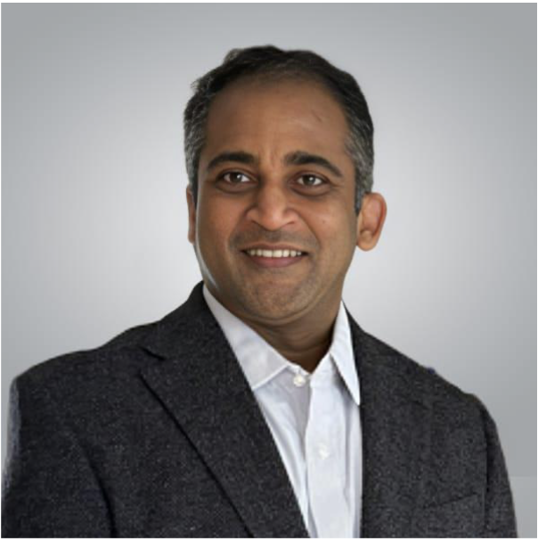
Rajkumar Kettimuthu is a Senior Scientist and Group Leader in the Data Science and Learning Division at Argonne National Laboratory, and a Senior Fellow at the Northwestern-Argonne Institute of Science and Engineering, Northwestern University. His research spans quantum networking, distributed quantum computing, and AI-driven scientific workflows. He is the lead developer of SeQUeNCe (Simulator of QUantum Network Communication) and has delivered tutorials on the framework at IEEE QCE, IEEE ANTS, and ACM SIGSIM-PADS. His group recently developed QUANTA (Quantum Network Agentic Arena), a framework that uses LLM-based AI agents to automate quantum research workflows and explore distributed quantum computing architectures through simulation. He is a Distinguished Member of ACM and a Senior Member of IEEE.
Hardware Security in Mainstream and Emerging Memory Technologies
Hardware Security in Mainstream and Emerging Memory Technologies
Chair: Biswajit Ray, Sudeep Pasricha and Ujjwal Guin
- [730] Hardware Trojan Attacks and Countermeasures on Photonic In-Memory Neural Network Accelerators.Salma Afifi, Ishan Thakkar, Sudeep Pasricha
- [843] Learning-Based Counterfeit IC Detection Through SRAM Power-Up States.Zakia Tamanna Tisha, Ujjwal Guin
- [845] FlashScope: A Low-Cost Open-Source Framework for Characterizing COTS NAND Flash Memory.Biswajit Ray, Aleksandar Milenkovic, Habib Ur Rahman, Matchima Buddhanoy, Mondol Anik Kumar
Poster session 1
Poster session 1
Chair:
- [186] Quantum Fourier Neural Operator for Market Trend Forecasting.Ritisha Katiyar, Shashanka Shekhar Sharma and Gayathri M
- [569] An Interpretable Hybrid Quantum-Classical Learning Model for Liver Disease Classification.Swastika Mitra, Arpita De, Bikromadittya Mondal, Surajit Mandal and Balaram Ghosal
- [752] Explainable Quantum Neural Network Approach for Identification of Lung Cancer among Non-Smoking Females.Anamika Mahapatra, Mahua Nandy Pal and Debashis De
- [765] QIACO-VQSF: A Hybrid Classical–Quantum ACO Framework for the Travelling Salesman Problem.Akanksha Kumari, Preetishree Bhowmik, Sayantan Poddar, Rahul Debnath, Amartya Dutta, Riya Majumder and Rajat Kumar Pal
- [768] Robust Tracking Under Quantum-Enhanced Measurements with H∞ based IMM Filter.Parthib Roy, Ankita Pramanik and Saikat Chandra Bakshi
- [777] Low Light Image Enhancement via Modified Improved Simple Quantum Representation (MISQR).Arnab Chatterjee, Subrata Sarkar, Suvamoy Changder and Amlan Chakrabarti
- [781] Remote Access Trojan Detection on IoT Devices Using Quantum Variational Autoencoders.Shiva Agarwal, Ayantika Chatterjee and Debdeep Mukhopadhyay
- [791] QuEST: Quantum Noise Aware Circuit Evaluation and Selection Transpiler.Matthias Einarsson, Gabrielle MacNeil, Qiaoyan Yu and Sandeep Sunkavilli
- [889] Hybrid Quantum Adders with Lower Approximation for Noise Resilience and Enhanced SecurityBhaskar Gaur and Himanshu Thapliyal
- [50] LoGAN: Logic Gate Sizing using Graph-GANs.Lalith Adithya Sai Channapragada, Naman Mehrotra and Shubham Sahay
- [416] Hitch: Leveraging Machine Learning for Hold Violation Waiver Through Internal Glitch Height Estimation.Umang Singadiya, Pooja Beniwal, Sneh Saurabh and Ajoy Mondal
- [99] Design of Heterogeneous Coprocessor Architecture Based on RISC-V Instruction Set Extension.Dan Liu, Junhao Wang, Zhe Zhang, Fei Ma and Junhao Li
- [135] Cache-Line-Based Lookahead Instruction Prefetching for RISC-V Processor.Yumeng Liu, Hongge Li, Xinyu Zhu, Yinjie Song and Ziwen Wang
- [154] A Scalable LUT-Based Approximate MAC Architecture for Energy-Constrained Neural Network Accelerators.Anoop R, Akanksha Jain, Gopal Raut and Dr. Santosh Vishvakarma
- [190] Towards Efficient Post-Quantum Cryptography: Implementations of Optimized K2RED, Plantard, and Approximate Modular Multipliers.Sahil Maurya and Dr. Bikram Paul
- [195] Design of Reconfigurable Barrett Reduction Module for Modular Reduction and Compression in Crystals-Kyber.Meghana Madhusudanan and Dr. Vikramkumar Pudi
- [296] GenAccel: A Framework to Generate Custom Heterogeneous Vector Accelerators on FPGAs.Jay Shah and Nanditha Rao
- [343] Area Efficient VLSI Architectures for Vector-Matrix Multiplication in Nonlinear Adaptive Filters.Gayathri S, Sneha Sivaram, Pavankumar Ganjimala and Subrahmanyam Mula
- [401] Hybrid Approximate Multiplier Design Using OR-Based LSB Approximation.Pranav Srinivasan and Atin Mukherjee
- [421] Low Power High Throughput Vedic Multiplier-based LeNet-5 CNN Systolic Array Architecture.Venkateshwara Rao Mogili, Teena Jangid and Anand D. Darji
- [426] Hardware-Efficient Bit-Mapped Softmax Function for Deep Neural Networks.Akash Dev Roshan, Prithwijit Guha and Gaurav Trivedi
- [438] Hardware-Efficient VLSI Architecture of Compressive Sensing-based Wideband Spectrum Sensor for Scanning Sub-6 GHz Band.Manas Mondal, Rahul Shrestha and G. Shrikanth Reddy
- [460] Hardware Efficient Posit-based MAC Design for Approximate Computing in Edge AI Application.Niket Singla, Anand Darji, Priyank Prajapati and Pinal Engineer
- [480] Energy-Efficient Ternary Approximate Multiplier with Error Compensation for Neural Networks.Hemanth Krishna, Srinivasu Bodapati and K Sridharan
- [487] All-Digital Slewing Variable-Frequency Clock Synthesis via Phase Accumulator and Edge Toggler.Diya Chattopadhyay, Gitashree Thengal, Vipin Kumar Singh, Vijay Pratap Yadav, Vassilis Alimisi, Paul P Sotiriadis and Alak Majumder
- [488] Low Cost FPGA Implementations of Image Steganography Using Difference Expansion.Mohamed Asan Basiri M (Department of ECE, IIITDM KURNOOL) and Ande Bhargav
- [495] Stateflow Modelling Based Approach towards Transistor Sizing for Optimised Performance.Sukriti Dhang , Devleena Ghosh , Chittaranjan Mandal , Indrajit Chakrabarti and Partha De
- [520] Time-Multiplexed Multi-Lane Hybrid Merge Sorting Accelerator for Energy-Constrained FPGA Edge Computing.Y Charan Krishna , Sita Devi Bharatula, B Naresh Kumar Reddy and G Lakshminarayanan
- [657] FPGA Implementation of Low-Complexity Hybrid ML-Based DPD Model for Power Amplifier.Swapnendu Das , Hemant Kumari, Adnan Hussain Sarkar , Prabir Saha and Shubhankar Majumdar
- [680] A Reconfigurable Multiplier Architecture for Error-Resilient Applications in RISC-V Core.Pragun Jaswal , L. Hemanth Krishna and Srinivasu Bodapati
- [687] FPGA-Accelerated DoA Estimation for AVS Using Bartlett & Capon Beamformers, Eigenvector, and Acoustic Intensity Method on a Zynq-7000 SoC.Ethesham Ahmed and Mohd Wajid
Technical Session 2A – Computer-Aided Design & Verification
Technical Session 2A – Computer-Aided Design & Verification
Chair: Dr. Chandan Karfa, IIT Guwahati
- [377] Intent2Inject: An Agentic LLM Framework for Analog Defect Weight Generation.Jayeeta Chaudhuri, Mayukh Bhattacharya, Krishnendu Chakrabarty
- [373] Spec2Cov: An Agentic Framework for Code Coverage Closure of Digital Hardware Designs.Sean Lowe, Elias Hilaneh, Alma Babbit, Nakul Gopalan, Vidya Chhabria, Aman Arora
- [104] Accelerating Precise End-to-End Simulation: Latency-Sensitive Many-core System Modeling.Yinrong Li, Zexin Fu, Yichao Zhang, Germain Haugou, Chi Zhang, Marco Bertuletti, Bowen Wang, Luca Benini
- [703] Joint Application Mapping and Deadlock-Free Routing for Arbitrary NoC Topologies.Shuang Liu, Martin Radetzki
- [583] Boosting Energy Efficiency of Systolic Arrays using Hardware Tiling and Johnson counter based data feeding schemeArghyajoy Mondal, Rajdeep Samanta, Ashwin Krishnan, Sparsh Mittal, Rekha Singhal, Manoj Nambiar
Technical Session 2B – Applied & Future Computing
Technical Session 2B – Applied & Future Computing
Chair: Prof. Ansuman Banerjee, ISI Kolkata
- [175] ProbSplat: Efficient Probabilistic Hardware for Gaussian Splatting in 3D Scene Reconstruction.Siddarth Gottumukkula, Samartha M P, Vedant Pahariya, Priyanshi Jain, Priyesh Shukla
- [176] XENA: An XGBoost Enhanced Neural Hardware Accelerator for Event-Driven, Ultra-Low-Power Arrhythmia Classification.Shivam Dhamesha, Teena Jangid, Anand Darji
- [169] O-POPE: High-Frequency Pipelined Outer Product based GEMM acceleration with minimal buffering overhead.Danilo Cammarata, Angelo Garofalo, Luca Benini
- [178] Intelligent In-Field Testing of Digital Microfluidic Biochips using Reinforcement Learning.Sukanta Bhattacharjee, Bhargab Bhattacharya, Ritik Kumar Koshta, Arghyadip Roy, Shigeru Yamashita
- [192] Quantum Machine Learning for Intrusion Detection: Circuit Design, Kernel Analysis, and Comparative Performance Assessment.Mohore Mukhopadhyay, Ishani Das, Tuli Bakshi
- [285] A Current Mirror Based Reconfigurable Sense Amplifier For Energy Efficient In-Memory Computing.Parminder Kaur, Aman Kumar, Amandeep Kaur
Special Session 3 – Energy Efficient Intelligence: From High-Performance Computing to Ultra-Low-Power Edge AI
Special Session 3 – Energy Efficient Intelligence: From High-Performance Computing to Ultra-Low-Power Edge AI
Chair: Saibal Mukhopadhyay
- Talk 1: Dynamic Reliability and Energy Management in High Performance ProcessorsAbstract: Modern high-performance computing systems face increasing challenges from variation-induced failures and stringent efficiency constraints. This talk reviews advanced voltage-droop mitigation techniques using digital droop sensors together with dynamic guardband control loops to improve performance and power efficiency while maintaining reliability. The talk will highlight self-monitoring processor systems that leverage sensor-driven environment adaptation and workload-aware optimization to protect against timing violations and voltage droops, illustrating the role of adaptive control in energy-efficient and reliable high-performance processor design.
- Speaker: Dr. Rahul M. Rao, IBM India Systems Development
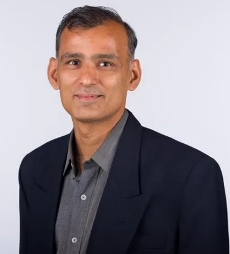
BiographyRahul M. Rao is a Distinguished Engineer at IBM India Systems Development. With over two decades of experience in high-performance circuit and system design, he leads IBM’s server design hardware development team in Bangalore and serves as Chief Engineer for IBM’s Power processor development. He is a member of the IBM Academy of Technology, an IBM Master Inventor, and an adjunct faculty member at IIT Madras. He received his M.S. and Ph.D. degrees from the University of Michigan, Ann Arbor. - Talk 2: Cognitive Sensing: A VLSI PerspectiveAbstract: Autonomous systems are a new driver for microelectronics promising transformative changes in the civilian and defense applications. However, intelligent autonomy requires continuously processing high-quality sensor data in real-time, leading to analog-data deluge that imposes major latency and power challenges in edge platform. This talk will discuss algorithm and circuit technologies to enable efficient cognitive computing at the edge platforms by moving feature extraction closer to the sensor, replacing the traditional sense-digitize-infer pipeline with analog and mixed-signal architectures that directly generate task-relevant representations. In particular, the talk will highlight emerging algorithmic pipelines for streaming sensor data processing, including sequence-processing methods based on state space models for efficient temporal inference, and mixed-signal computing approaches for energy-efficient ultra-low-latency realization of the algorithms. Examples from vision and radar perception pipeline will illustrate both the opportunities and the challenges of reliability, robustness, and hardware-algorithm co-design in next-generation cognitive computing at the edge
- Speaker: Prof. Saibal Mukhopadhyay, Georgia TechBiographySaibal Mukhopadhyay is the Joseph M. Pettit Professor in the School of Electrical and Computer Engineering at the Georgia Institute of Technology. He received his B.E. from Jadavpur University and Ph.D. in Electrical and Computer Engineering from Purdue University, and joined the Georgia Tech faculty in 2007 after working at IBM T. J. Watson Research Center. At Georgia Tech, he leads the Gigascale Reliable Energy-Efficient Nanosystem (GREEN) Lab. His research focuses on energy-efficient, intelligent, and secure systems, spanning VLSI, mixed-signal circuits, sensing systems, and hardware-algorithm co-design. He also leads CogniSense, the JUMP 2.0 Center on Cognitive Multispectral
- Talk 3: Compute Without Compromise: Energy-Efficient Architectures from Chip to SystemAbstract. The proliferation of AI and data-intensive workloads is exposing fundamental energy efficiency bottlenecks in conventional computing architectures, rendering continued reliance on classical Dennard scaling insufficient as a primary optimization lever. Addressing this challenge demands a co-design methodology that spans the full architectural hierarchy — from on-chip microarchitecture through die-to-die interconnect to system-level integration. This presentation covers how compute systems architecture research, structured around three complementary research thrusts. First, we examine the design of RISC-V-based SoC and System-in-Package (SiP) platforms targeting energy-constrained AI inference and edge computing workloads, with emphasis on architectural trade-offs in heterogeneous compute fabrics. Second, we investigate UCIe-compliant chiplet integration as a means of composing heterogeneous logic and memory dies while minimizing inter-die interconnect energy. Third, we explore monolithic 3D integration as a pathway to fundamentally reducing memory-logic data movement — a dominant contributor to system-level energy dissipation in modern AI accelerators. Collectively, these thrusts constitute a vertically integrated architecture research agenda aligned with CMOS 2.0 roadmap, wherein energy efficiency is treated as a primary design constraint rather than a secondary optimization objective. Looking ahead, we identify open research challenges including thermal-aware floorplanning under 3D integration density constraints, standardization gaps in chiplet power management interfaces, and the need for architecture-level simulation frameworks capable of capturing cross-layer energy interactions with sufficient fidelity for early design-space exploration.
- Speaker: Dr. Arindam Mallik, IMEC
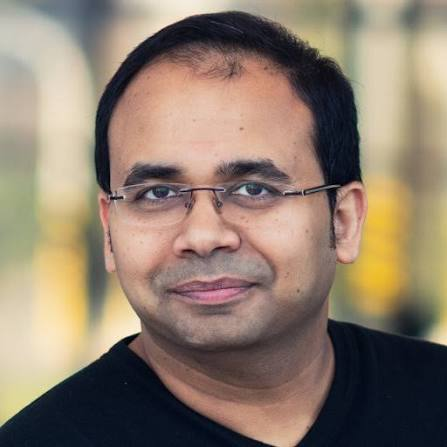
BiographyTBD - [836] {CRAMER}: Low-power CNN-based Hardware Design for Real-time EMG-based Hand Gesture Recognition.Kamal Sai Malla, Pradhuman Singh, Madhuri Nissankararao, Swarnima Swarnima, Debayan Das
- [840] MOAT: Model-Agnostic Randomized Transformations to Prevent Efficiency Degradation Attacks on Vision TransformersAnadi Goyal, Nandish Chattopadhyay, Anupam Chattopadhyay, Chandan Karfa, Norrathep Rattanavipanon
Special Session 4 – Security by Design
Special Session 4 – Security by Design
Chair: Venkata Prasanth Yanambaka, Jonathan Gratch, Jian Zhang and Saraju Mohanty
- [710] Power-Delay Optimized Composite Field AES S-box/ S-1-box using Parallel Processing and Retiming for Secure Industrial IoT Applications.Emandi Jagadeeswara Rao, NIT Rourkela, Ayas Kanta Swain, Kamalakanta Mahapatra
- [824] Secure Land Registration: A Blockchain Framework with Federated Identity and Verifiable Ownership Transfer.Abdhisuta Dash, Bhabani Sankar Samantray, K Hemant Kumar Reddy, Sambit Kumar Mishra, Deepak Puthal
- [725] DPRS: Secure and Lightweight Federated Vision Transformers for Agricultural Edge AI.Sai Mahesh Mudavat, Alakananda Mitra, Saraju Mohanty, Elias Kougianos
- [731] Adversarial Threats and Security Implications in Agentic AI Architectures.Deepak Puthal, Ankita Behera, Sambit Kumar Mishra, Parag Kulkarni, Amit Kumar Mishra
- [711] An Explainable Multi-Stage RTL Hardware Trojan Detection Framework Using Structural, Semantic, and Risk-Aware Analysis.Bharat Patidar, Pradeep Kumar Mohanty, Ayas Kanta Swain, Kamalakanta Mahapatra
Quantum Computing 2
Quantum Computing 2
Chair: Dr. Rajkumar Kettimuthu, Argonne National Laboatory
- Talk: Quantum Advantage: Candidates and Tools
- Speaker: Dhinakaran Vinayagamurthy, IBM Quantum India & IIT Madras
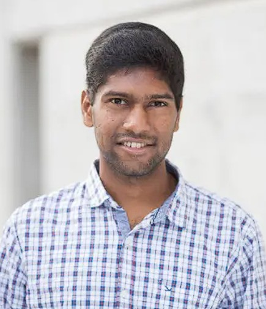
BiographyDr. Dhinakaran Vinayagamurthy is the in-country manager for the IBM Quantum team in India and an Adjunct Professor in the Department of DSAI at IIT Madras. The technical focus is on enabling researchers and developers to build advanced algorithmic demonstrations on IBM quantum hardware and useful tools around Qiskit, the quantum stack used by 70% of quantum programmers in the world. His research in quantum computing and cryptography has resulted in about 20 peer-reviewed publications and 16 patents with more than 1500 citations now. He has received a best paper finalist award at ACM CCS, IBM internal awards like Outstanding Technical Accomplishments, Technical Collaboration Achievement and One IBM India-South Asia Growth Award respectively for his research, significant contributions to open-source and IBM India market growth respectively.
He has been a lead coordinator or instructor in NPTEL courses, ACM Winter Schools and faculty development programmes across India on quantum computing, and on committees for MeitY and Andhra Pradesh Quantum initiatives. He holds a PhD in Computer Science (Quantum Information) from the University of Waterloo, a Masters in Computer Science from the University of Toronto and a Bachelors in Computer Science & Engineering from the College of Engineering, Guindy. - Talk: Quantum Biomedical AI: A High-Impact Scientific Testbed
- Speaker: Himanshu Thapliyal, Southern Methodist University, USABiographyDr. Himanshu Thapliyal is the inaugural Walden and Paula Rhines Endowed Quantum Informatics Professor at SMU and a full professor in Electrical and Computer Engineering and Computer Science. His honors include the NSF CAREER Award, IEEE-CS TCVLSI Mid-Career Award, and IEEE Computer Society Distinguished Contributor Award. He is an IEEE Computer Society Distinguished Visitor and an editor for leading quantum and computing journals.
- Talk: Quantum Software 2.0: Compilation for Distributed Quantum Systems
- Speaker: Poulami Das, University of Texas at Austin, USA
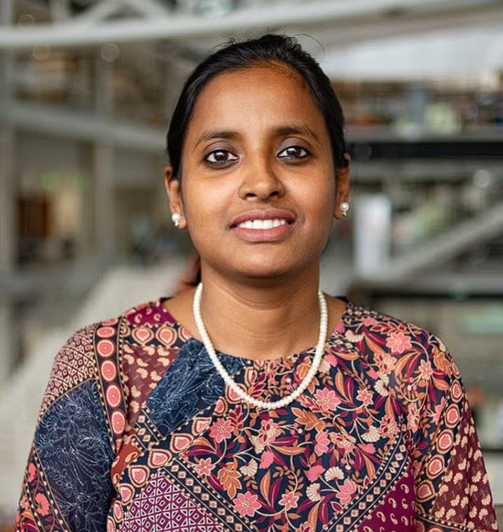
BiographyPoulami Das is an Assistant Professor and a Fellow of the AMD Chair in Computer Engineering in the Department of Electrical and Computer Engineering at The University of Texas at Austin. Her research focuses on quantum computing systems, spanning quantum software, architecture, and error mitigation techniques to improve the reliability and scalability of quantum hardware. She received her PhD from the Georgia Institute of Technology in 2023 and previously earned her MS from UT Austin.
Q&A with Speakers: Rajkumar Kettimuthu, Dhinakaran Vinayagamurthy, Himanshu Thapliyal, Poulami Das Moderator: Bhaskar Gaur, University of Alabama in Huntsville, USA
Bhaskar Gaur is an Assistant Professor in the Department of Electrical and Computer Engineering at the University of Alabama in Huntsville (UAH), USA. He received his Ph.D. from the University of Tennessee, Knoxville in 2025. His research focuses on advancing next-generation computing systems through interdisciplinary work in quantum computing, generative AI for VLSI design and automation, and hardware security
Technical Session 2C – Digital Circuits & FPGA based Designs
Technical Session 2C – Digital Circuits & FPGA based Designs
Chair: Prof. Sudeb Dasgupta, IIT Roorkee
- [351] An Ultra-Low Power Area Efficient Digital Decimation Filter using a Single Shift-Add block for a ∆Σ ADC.Prajwal Sastry, Deenank Sharma, Sathvik Duddela, Adityavardhan Singh, Pranav Konidena, Bishnu Prasad Das
- [368] Sustainable, Ultra-Low Leakage Row Decoder Design for Low Power Memory Sub-System.Sonia Bondwal, Anuj Grover
- [379] Energy-Efficient Deep Learning Acceleration for Real-Time Edge Classification.Ayush Dixit, Abhishek Yadav, Binod Kumar
- [386] DSP-Centric and Deep-Pipeline Architecture for Machine-Learning Kernel Acceleration on FPGA.Rahul Shrestha, Dhruv Rohilla
- [459] A Reconfigurable Dual-Mode FIR Architecture for Multichannel Single-Rate and Super-Sample-Rate Processing.Apurba Prasad Padhy, Bishnu Prasad Das
Technical Session 3A – Emerging & Post-CMOS Technologies
Technical Session 3A – Emerging & Post-CMOS Technologies
Chair: Dr. Rakesh Das, IIEST Shibpur
- [59] Design of High-Performance Quaternary Sequential Logic and Robust SRAM using CNTFETs.Hina Khan, Md Shabaz Ansari, Naushad Alam
- [142] Adaptive Clifford+T Decomposition of Large Toffoli Gates with One Clean Ancilla.Abhoy Kole, Majd Assaad, Till Schnittka, Rolf Drechsler
- [150] Physics-Informed Machine Learning for Fast BEOL Thermal Hotspot Prediction.Jaiprakash Dhritlahare, Rahul Kumar Verma, Manodipan Sahoo
- [156] SNR-Aware IP Core Mapping Technique under Varying Routing Algorithms for Mesh-Based Hybrid Optical-Electrical NoC.Sucharita Samanta, Yashkumar Jaysukhbhai Kotadiya, Kanchan Manna
- [162] WVarByS: A Write Variation Aware Selective Bypassing Strategy to Improve Lifetime of STT-RAM based Last Level Caches.Arijit Nath, Anisha Maan, Chetan Kumar
Technical Session 3B – Applied & Future Computing
Technical Session 3B – Applied & Future Computing
Chair: Dr. Venkata Kalyan Tavva, IIT Ropar
- [336] MXCore: Rethinking Matrix Multiplication Accelerators for Microscaling (MX) Arithmetic.Gamze Islamoglu, Jayanth Jonnalagadda, Arpan Suravi Prasad, Francesco Conti, Angelo Garofalo, Luca Benini
- [353] Probabilistic computing based p-Circuits for SAT and Set Cover Problems with FPGA Implementation.Amit Singh, Srinivasu Bodapati
- [365] Logarithmic Domain Spiking Neuromorphic Co-Processor for Adaptive Anomaly Detection in Non-Stationary Edge Environments.Venothini P, Y Charan Krishna, B Naresh Kumar Reddy, G Lakshminarayanan
- [376] Hardware–AI Co-Design of a 0.3 V 2D SnS Memristive Neuron with Generative Diffusion Modeling and 45 nm CMOS Realization Across Process Corners.Anshul Awasthi, Omkar Kulkarni, Banala Rajesh, Lalita Bhanu Murthy Neti, Surya Shankar Dan
- [385] Three-Timescale Reward-Modulated Plasticity in a Two-Neuron Coupled LIF Architecture for Autonomous Obstacle Avoidance.Prasun Singhal, Sparsh Mittal
Industry Forum Track
Industry Forum Track
Chair: Biswadip Chatterjee, HCLTech
- Talk 1: Advanced Technology, AMS Design and Agentic AI – Fascinating journey ahead!Abstract:
- Over the last few years technology advancement has been driving the semiconductor transformation at a rapid pace. While there are significant changes with technology fabrication , changes at system and architecture level had been phenomenal. With these change Analog and mixed Signal design have evolved rapidly, providing better performance at lower time. This talk will talk about the journey , the paradigm shifts and the pathway ahead with the AI based solutions getting early adoptions. As a semiconductor professional every day seems to be not only more exciting but also leading to multiple challenges with hidden possibilities. Bigger the problem , even better are the opportunities !
- Speaker : Shri. Mrinal Das
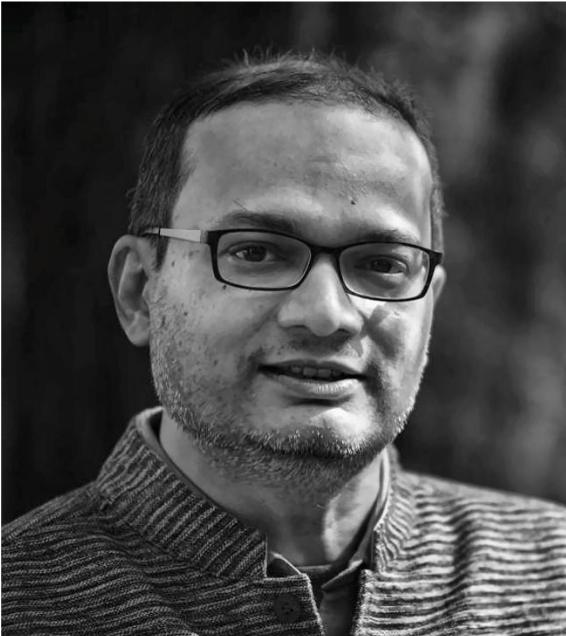
Biography
Mrinal Das is a semiconductor Industry contributor with around three decades of experience and a specialization for Analog/Mixed-Signal/RF product designs for diverse technology applications. He presently heads Sensor IP development team for Synopsys with a focus on Silicon Lifecycle monitoring IPs for latest CMOS technologies. Prior to Synopsys, Mrinal cofounded Sankalp Semiconductor and served as Vice President and Board of Director while scaling the company from scratch to 1000+ people. Sankalp was an Industry leader for MixedSignal/RF chip design solutions from India and was acquired by HCL Technologies in 2019. Mrinal’s early work in the semiconductor industry was on chip developments with Texas Instruments in areas like Voice band modem, Cable modem, Digital Still Camera, Wireless LAN, Bluetooth etc. He has worked on several high-end RF transceiver SOC chips and successfully scaled up to production volume with niche customers. Mrinal loves to work with both Industry as well as academia with a deep passion to bring research innovation into innovative products - Talk 2: Qualcomm University Relations, L2Pro and AIAbstract:
- This presentation highlights Qualcomm’s University relations program and research engagement covering faculty engagement, student innovation programs and hardware platforms enablement. It also presents the Qualcomm L2PRO Intellectual Property platform and AI Upskilling Certification program, aimed at equipping students, researchers, startups, and innovators with industry-relevant skills in AI, technology, and innovation management.
- Speaker: Shri. Souvik Basu
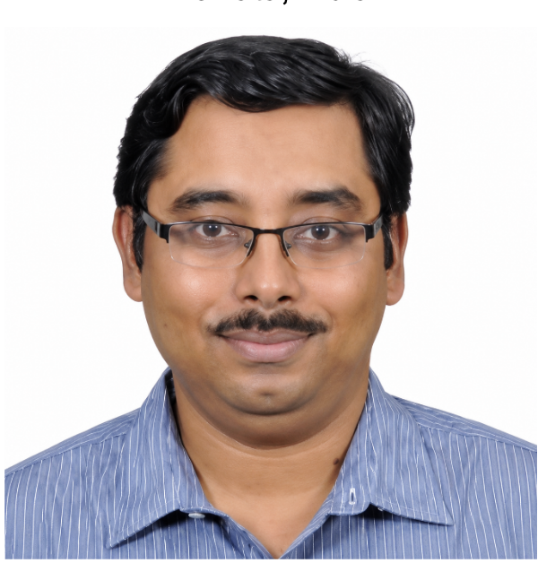
Biography
Souvik Basu, Director Program Management has 20+ years of experience in the area VLSI design and program management. Souvik holds M.Tech from IIT Kanpur, CSE ; Executive MBA from IIM Kolkata ; Masters in Business Law from National Law School of India University (NLSIU), Bangalore and M.Tech in AI & ML from BITS Pilani. Souvik also is a Guest Professor at IIT Gandhinagar, CSE department. - Talk 3: 3D Integration: Challenges, Opportunities, and the Path ForwardAbstract:
- The talk highlights the challenges and opportunities of 3D integration in semiconductor technology, framed through GlobalFoundries’ differentiated portfolio of purpose-built platforms spanning RF, silicon photonics, power, and ultra-low-power CMOS. It focuses on wafer-to-wafer (hybrid) bonding as a path beyond traditional transistor scaling for RF chips and showcases GF’s first-of-its-kind 3DIC with 90nm RFSOI for RF FEM’s. The talk further details the circuit design aspects like schematic, layout, modeling and also highlights some challenges in thermal management and associated PDK solution to address this—required to make 3D-integrated RF products first-time-right.
- Speaker: Balaji Swaminathan
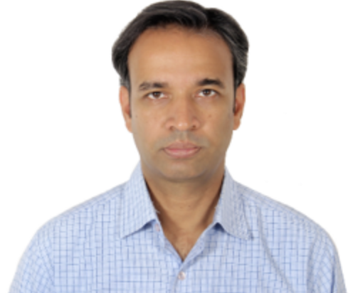
Biography
Balaji Swaminathan earned his MS (Research) from IIT Madras, where his research focused on superjunction power devices. He began his career at IBM and later moved to GlobalFoundries, initially working on passive device modeling before transitioning to FET modeling and subsequently taking on modeling leadership roles. He is a senior technical leader with deep expertise in RF SOI compact modeling and PDK development, having served as Model Lead across three generations of GlobalFoundries RFSOI technologies. Balaji’s work has significantly advanced RF switch and LNA model accuracy through the introduction of key capabilities such as harmonic modeling, enhanced nonlinearity characterization, and improved large-signal behavior. His contributions have been instrumental in driving and sustaining business in the multibillion-dollar front-end module market. Balaji is widely recognized for resolving complex model-to-silicon correlation challenges for leading RF customers, mentoring emerging modeling leaders, and strengthening RF modeling expertise within the organization. He is the recipient of multiple CEO and Technical Excellence Awards. Currently, as a Distinguished Member of Technical Staff (DMTS), his focus is on enabling next-generation modeling tools and features, driving model efficiency improvement initiatives, and supporting key customers within the RF business line.
Special Session 5 – Hardware Verification using Large Language Models
Special Session 5 – Hardware Verification using Large Language Models
Chair: Chandan Kumar Jha and Ansuman Banerjee
- [787] Generative AI and Large Language Models (LLMs) for Electronic Design Automation (EDA) and Chip Design.Farshad Firouzi, Krishnendu Chakrabarty
- [756] Arcane: An Assertion Reduction Framework through Semantic Clustering and MCTS-Guided Rule Exploring.Hongqin Lyu, Yonghao Wang, Zhiteng Chao, Tiancheng Wang and Huawei Li
- [838] LLM-Based Assertion Generation: Lessons, Challenges, and Future DirectionsChandan Karfa and Bhabesh Mali
- [761] Modular End-to-End Pipeline for Formal Property Verification using Large Language Models.Luca Müller, Chandan Kumar Jha, Benjamin Arlt, Muhammad Hassan and Rolf Drechsler
- [762] Event-based versus State-triggered: An empirical case study on LLM-assisted assertion generationDebleena Das, Subhajit Paul, Ansuman Banerjee, Amlan Chakrabarti and Subhra Kanti Das
Quantum Computing 3
Quantum Computing 3
Chair: Prof. Indranil Sengupta, IIT Kharagpur
- [778] Distributed Scheduling of Quantum Circuits with Noise-Aware Fidelity Optimization under Time Constraints.Debasmita Bhoumik, Ritajit Majumdar, Amit Saha, Susmita Sur-Kolay
- [782] SRAM-Inspired Micro-Bias Stabilization for Quantum PUFs on Modern NISQ Hardware.Yerukala Karthik, Ankesh Jain
- [784] Quantum-Assisted Multi-Objective Pathfinding for UAV Swarms with Kinematic Constraints.Shubhashish Shukla, Prasoon Joshi, Samridhi Tiwari, Pawan Mishra, Nilotpal Chakraborty
- [788] On the Interplay Between CVaR Objectives and Classical Optimizers in Variational Quantum Algorithms.Ali Sabir Abbassi, Yann Dujardin, Philippe Lacomme, Caroline Prodhon
- [813] QML for Quantum Sensing under Measurement-Induced Information Loss.Sounak Bhowmik, Himanshu Thapliyal
Technical Session 3C – Digital Circuits & FPGA based Designs
Technical Session 3C – Digital Circuits & FPGA based Designs
Chair: Prof. Bishnu Prasad Das, IIT Roorkee
- [86] An FPGA-based INT8 MobileNetV2 Accelerator Integrated with a RISC-V SoC for Real-Time Semiconductor Wafer Defect Detection.Rhythm Patel, Priyanshu Tyagi, Sparsh Mittal,Rekha Singhal
- [131] Hardware-Efficient Constructive Interference Precoder Design for MU-MIMO Systems.Saishree Kosuru, Priyanka Agarwal, Madhav Rao
- [161] A Hardware-Oriented Shift–XOR Modular Reduction Architecture for Cryptographic Systems.Ruby Kumari, Abhijit Karmakar, Sumeet Saurav.
- [249] A Logic-Reuse Approach to Nibble-based Multiplier Design for Low Power Vector Computing.Rownak Chowdhury, Mostafizur Rahman
Poster session 2
Poster session 2
Chair:
- [60] Memristive ANNs with Fast Weight Updates inspired by Neuronal Activity Synchronization.Santlal Prajapati, Susmita Sur-Kolay, Manobendra Nath Mondal , Biswaroop Maiti and Kritanta Saha
- [100] HACO: A Hardware-Aware Coefficient Optimization Framework for Efficient AI Inference.Ayush Dixit , Rachanna Hallikatti , Abhay Deshpande and Surya Palakurthi
- [170] Bidirectional Quantum Processor Interfacing by a 4-Kelvin Analog Signal Chain for Superconducting Qubit Control and Quantum State Readout.Deepak R V , Lokendra Kanawat , Koya Jayadeep and Priyesh Shukla
- [398] A Fast Surrogate-Guided GBDT Power-Prediction Framework with Accelerated Time for Low-Power FSM EncodingKaushik Khatua, Santanu Chattopadhyay and Anindya Sundar Dhar
- [181] FlexMAC : Flexible Posit MAC for Accelerated Mixed-Precision Neural Network Inference.Shruti Singh , Aravind Voggu and Madhav Rao
- [197] Unifying Instruction and Data in Messages for a Streaming AI Accelerator.Rownak Chowdhury and Mostafizur Rahman
- [312] A 32 nm CNFET-Based Energy-Optimized Ternary SRAM with Enhanced Stability.Pooran Singh, Nitesh Kumar Rathore, Ramakant Yadav (Mah
- [327] SHIELD8-UAV: Sequential 8-bit Hardware Implementation of a Precision-Aware 1D-F-CNN for Low-Energy UAV Acoustic Detection and Temporal Tracking.Susmita Ghanta , Karan Nathwani and Rohit Chaurasiya
- [346] A New Arithmetically Efficient Algorithm of Split-Radix-8 Discrete Galois Transformation for KyberKEM.Kinnera Adimulam , Krishna Vardhan Chathurajupalle , Naveen D S , Gaurav Dhiman, Rohit Chaurasiya and Sarada Prasad Gochhayat
- [347] In-DRAM Bit-Serial-Optimized Approximate Computation.Krunal Desai , Ishaan Sharma , Neha Gupta, Anand Bulusu and Sudeb Dasgupta
- [372] A Sparse-Aware Ternary Compute-in-Memory with In-Macro Activation Functions.Srimayee Ghosh , Gaurav Patil and Viveka Konandur Rajanna
- [392] An Analog Hardware Edge Detector Based on the Roberts Cross Algorithm for Vehicle Detection Applications.Andreas Papathanasiou , Vassilis Alimisis, Charalampos Papadopoulos , Vasileios Moustakas , Alak Majumder and Paul P. Sotiriadis
- [418] A Hardware-Efficient VLSI Architecture and FPGA Implementation of a CWT-Based Wideband Spectrum Sensor for Cognitive Radio Networks.Ninad Kamble , Rohit Chaurasiya and Abhishek Kumar
- [424] Securing ViT using Bit-Flip Mitigating Accelerator.Om Chandra Sharma , Anmol Yadav , Vihan Sachin Karnik, Anadi Goyal and Palash Das
- [441] Lightweight RISC-V Processor with Integrated FFT Accelerator for Digital Stethoscope.Tarun Sharma , Nimal Vardhan M , Deepank Grover and Sujay Deb
- [453] A Leakage-Reduced Modular Multiplier for ML-KEM via Hamming-Weight Suppression.Shreya Reddy B R , Shayan Ahmad , Hemant Kumar C and Jawar Singh
- [539] HETAM-ABS: A Heterogeneous Taylor-Expansion Approximate Multiplier with Adaptive Boundary Setting for Precision-Aware Computing.Nipun Sagiraju , Uday Kumar Nemili and Madhav Rao
- [207] Towards Calibration-aware Quantum Circuit Compilation for NISQ Processors.Arighna Deb , Subrata Das , Suman Roy and Debesh Das
- [374] Sample Preparation in Conventional and MEDA Based Biochips: An Adaptive Multiparameter Optimization Based Technique .Pranab Roy , Devendra Bhavsar , Sarit Chakraborty and Hafizur Rahaman
- [383] Design and Evaluation of All-Optical 2×1 concept Multiplexer via equivalent N-Type Optical Devices.Udit Kumar Rajbongsi , Mohd Mansoor Khan and Ramesh Kumar Sonkar
- [400] RRNV-12T: An Ultra-Low-Leakage, High-Speed, Radiation-Resilient Non-Volatile SRAM Bitcell for Next Generation Aerospace applications.Sukhen Mondal, Ranjeet Gupta , Deepak Joshi,Ravi S Siddanath , Manish Goswami and Kavindra Kandpal
- [463] Minimizing Complexity of Graphene PN Junction Circuits using Two Level SoP Representation.Subrata Das , Nabin Bera , Arighna Deb , Debesh Kumar Das and Soumya Pandit
- [623] Enhancing Robustness of Convolutional Spiking Neural Networks on Memristive Hardware.Aabid Amin Fida and Sparsh Mittal
- [670] Cross-MARL: MARL-based Fault-Tolerant Droplet Router for Cross-Referencing Biochips.Ritwika Majumdar , Piyali Datta , Arpan Chakraborty and Rajat Kumar Pal
- [684] Design and Optimization of Gate-Workfunction Modulated VTFET Gas Sensor for Detecting VOCs with Analog/RF Parameters: An Unfolded Route.Indranil Maity , Ankit Biswas ,Arighna Bhattacharjee ,Sneha Banerjee , Sarthak Karmakar ,Malay Gangopadhyay and Hafizur Rahaman
- [576] A 90.29-TOPS/W SRAM-Based Digital CIM Macro Featuring Novel Input Sparsity-Aware Addition and Low Overhead 30T Adder for Efficient Inference.Priyanshu Tyagi , Karunakar Reddy Mudhi Reddy and Sparsh Mittal
- [585] Detection of Water Content inside Biological Tissues by He-Ne Laser through 1D Photonic Waveguide.Laxmi Dhar Biswal ,Subha Ranjan Das , Naveen Kumar Gn ,Hafizur Rahaman and Chandra Sekhar Mishra
- [594] AxMoE: Characterising the Impact of Approximate Multipliers on Mixture-of-Experts DNN Architectures.Omkar Shende , Marcello Traiola and Gayathri Ananthanarayanan
- [619] Modeling and Performance Analysis of MFIS Stack FTJ-Based 1024×1024 Crossbar Array.Ajay Kumar ,Trishla Gurjar ,Vekariya Pritkumar ,Devarshi Mrinal Das and Pardeep Duhan
- [643] I2 -CSDM: Compact Inverse-ISI Feature Extraction for Neuromorphic Sleep Stage Classification.Sunkara Sai Shashank , Asha V ,Vasanthi R and Binsu Kailath
- [678] DSA-AdderNet: Differentiable Sparsity-Aware H/S Co-Design for SAD-Based DNN Accelerators.Bonthu Purnanand , Amartya Kumar , R S Haripriya and Jaynarayan T Tudu
- [688] An Energy-Efficient Time-Domain SRAM Compute-in-Memory Architecture With 5-Bit Delay-Line TDC for MAC AccelerationDeepkamal Puware, Aman Chakma , Bhupendra Singh Reniwal
- [690] Multi-Valued Logic based Stochastic Computing.Aratrik Roy and Sayan Chatterjee
Technical Session 4A – Emerging & Post-CMOS Technologies
Technical Session 4A – Emerging & Post-CMOS Technologies
Chair: Dr. Biswajit Ray, Colorado State University (CSU), USA
- [493] Near-Zero Multiplication Escape:A Framework for Sparse Deep Neural Networks Based on Racetrack Memory.Parsa Khorrami, Pavia Bera, John Templeton, Sanjukta Bhanja, Dayane Reis
- [282] FlexSpy: Side-Channel Spy Framework for Flexible Spiking Neuromorphic Hardware.Brojogopal Sapui, Priyanjana Pal, Mehdi B. Tahoori
- [284] Active-Write Robustness of STT-MRAM Against Static and Time-Varying External Magnetic Fields .Susheel Kumar Arya, Sonalie Ahirwar, Tanmoy Pramanik
- [427] From Device Physics to Physical Layout Designs: Physics-Guided Data-Driven Device-Circuit Co-Design Methodology for Ternary CMOS Standard Cells.Anshul Awasthi, Omkar Kulkarni, Harish R. Ramachandran, Surya Shankar Dan
Technical Session 4B – Applied & Future Computing
Technical Session 4B – Applied & Future Computing
Chair: Dr. Ruchika Gupta Chandigarh University
- [494] Energy-Efficient RNS-Based Architectures for Convolution and State-Space Models.Agniswar De, Sudip Ghosh, Pritam Bikram, Hafizur Rahaman, Bhargab B Bhattacharya
- [504] Low-Energy Reduced RISC-V Instruction Set Processor for Tsetlin Machine Inference at the Edge.Chanda Gupta, Sanidhya Bhatia, Shaurya Priyadarshi, Himani Panwar, Rishad Shafik, Sudip Roy
- [533] Inverse ML-Driven Transistor Sizing for Accurate Specification Mapping in Analog Integrated Circuits.Vaishnavi Jampani, Amir Ahmad, Zia Abbas
- [538] A CMOS LIF Neuron with Threshold Tunability through Body Effect.Krishan Mehra, Azhar Yaseen N. J, Mahendra Sakare, Devarshi Mrinal Das
- [543] Static-Dynamic Hybrid Prefetching for Cache efficient Bursty Workloads on Edge SoCs.Thejeswara Reddy, Tushar Vrind, Sonu Agrawal
Industry Forum Track
Industry Forum Track
Chair: DR. Sumantra Sarkar, AMD
- Talk 4: 1-TOPS (1 Tape-Out Per Student) programAbstract:
- TBD
- Speaker: Smt. Aparajita Banerjee (Co-founder, Stealth Semiconductor)
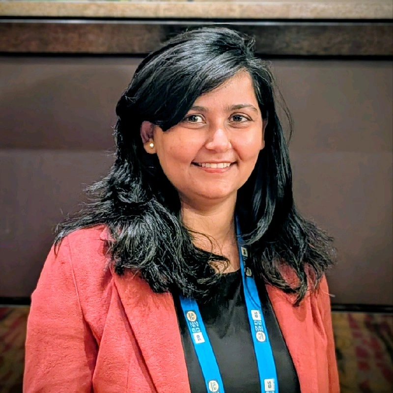
Bio
ASIC Design Lead with over 15 years of experience delivering complex, high-quality SoC and multi-chiplet system designs across wearables, laptops, servers, and emerging AI/Edge markets. Proven expertise in microarchitecture development, low‐power SoC execution, peripheral integration, and cross-functional leadership across global semiconductor organizations. Demonstrated success in leading multi-site teams from concept to tape‐out for complex SoCs at Meta and Intel, while driving consistent innovation through academic and national-level hardware initiatives in India. Adept at bridging hardware–software integration, vendor management, and design verification to enable efficient, high‐performance designs for next‐generation computing platforms. - Talk 5: HPC in AI Era: Architecting the Future of AIAbstract:
- TBD
- Speaker: Siddesh Halavarthi Math Revana, Corporate Vice President, AMD
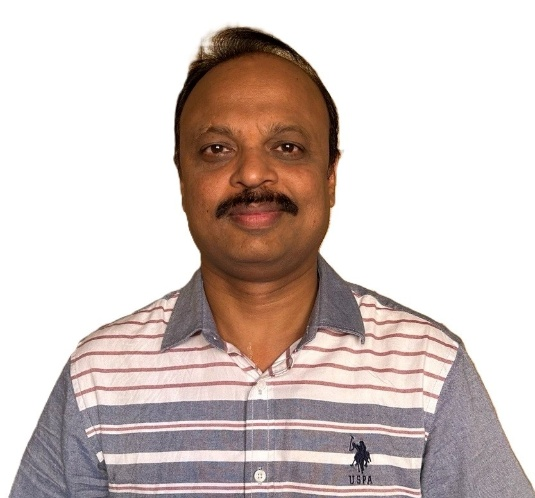
Biography
BiographySiddesh HMR is the Corporate Vice President leading AMD’s India Cores (CPU) organization, a role he has held for the past 2 years. He leads a passionate, end to end high performing cores team focused on delivering industry leading performance per watt CPUs across server, client, and S3 products. With over 25 years of experience, including 22 years at Qualcomm, Siddesh brings deep expertise across microarchitecture, RTL, DV, PD, and silicon debug, spanning advanced CPU cores, DDR, high speed interconnects, and memory subsystems. He has authored multiple technical publications, presented at leading industry conferences, received best paper awards. He holds a Master’s in Microelectronics, a Bachelor’s in Electronics and Communication Engineering with 4 granted with 6 pending US patents in CPU design. - Talk 6: Chiplet-Based system design leveraging 3D/2.5D ICs & Advanced Packaging: Post-Moore Era with Agentic DesignAbstract:
- TBD
- Speaker: Dr Biswajit Patra Senior Director Technology & Product Architect, ATV MC BU, Infineon)
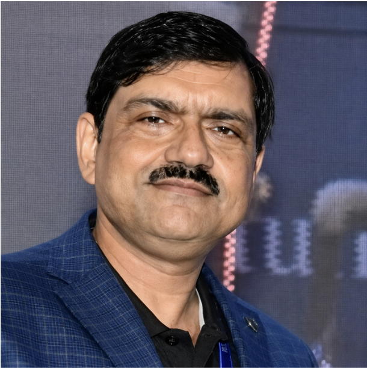
Biography
Dr. Biswajit Patra is a distinguished technologist with more than 23 years of experience in the semiconductor industry, during which he has contributed to the successful development of over 100 commercial silicon products. At Infineon Technologies, he serves as Product Architect and Senior Director of Technology, providing the technical leadership for the company's next- generation automotive silicon. Before joining Infineon, Dr. Patra drove work on AI server hardware platforms, total-cost-of- ownership (TCO) optimization, and the democratization of AI at Krutrim Si Design. Earlier in his career, he held senior leadership roles as Senior Principal Engineer at Intel and Director of Technology at Qualcomm. His core expertise spans AI server platform design, chiplet-based SoC architecture, and advanced silicon technologies. A Senior Member of the IEEE, Dr. Patra holds a PhD in Computer Science from Calcutta University and is an alumnus of IIM Ahmedabad.
Technical Session 4C – Digital Circuits & FPGA based Designs
Technical Session 4C – Digital Circuits & FPGA based Designs
Chair: Dr. Srinivasu Bodapati, IIT Mandi
- [288] Interaction-Aware Plane-Fitted Multiplier for Low-Power 64-2048-Point R2SDF FFT.Nanda Mitra Pammi, Ramkushal Bachhu, Madhav Rao
- [291] Spiker-LL: An Energy-Efficient FPGA Accelerator Enabling Adaptive Local Learning in Spiking Neural Networks.Alessio Caviglia, Filippo Marostica, Alessandro Savino, Stefano Di Carlo
- [294] TEJAS: A Thermal-Enhanced Joint Architecture Simulator for Optical Networks-on-Chip.Prasun Sharma, Kunal Mahajan, Girish K K, Biswajit Bhowmik
- [331] SLIM: A Scalable Large Integer Multiplier with Run-time Configurable Operand Length for FPGAs.Sasi Snigdha Yadavalli, Rajesh Kedia
- [470] A Novel Carry-Chain-Free FPGA Logic Element Featuring Multi-Fracturable Look-Up Table with Cascadable Link and Flexible InputsSuprabhat Bhattacharjee, Ayan Palchaudhuri
Special Session 6 – Emerging Design Paradigms for Quantum Computing
Special Session 6 – Emerging Design Paradigms for Quantum Computing
Chair: Anirban Bhatta charjee, Prof. Shigeru Yamashita and Anindita Banerjee
- [715] K-means and Genetic Reordering for SWAP-Efficient Quantum Circuits.Meet Harsola, Anirban Bhattacharjee, Laxmidhar Biswal and Hafizur Rahaman
- [726] Design and Hamiltonian Characterization of 4-Qubit Flip-Chip Transmon-Based Quantum Random Number Generator.Niranjan K S, Alan Thomas Paul, Prashamol Prakashan, Kala S and Nalesh S
- [751] Hybrid Quantum-Classical Computing via Subproblem Decomposition and Runtime Estimation.Shigeru Yamashita, Hiroyuki Tomiyama, Menghan Shi, Zanhe Qi and David Clarino
- [766] Variational Manifold Engineering in Quantum Chemistry: Structural Challenges in Ansatz Design.Abhoy Kole, Julie Maria Raju, Kamalika Datta and Rolf Drechsler
- [776] Engineering Non-Local Qubit Interactions Using Multi-Level Circuit QED Dynamics in Tunable Coupler Architectures.Uday Sannigrahi and Amlan Chakrabarti
Technical Session – User Design Track
Technical Session – User Design Track
Chair:
- [869] Bridging the Ther Divide: Empowering ASIC Designers with an Automated Model Generation Toolbox for Thermal-Aware Design.Siddarth Katare
- [870] Analysis of Post-Route Power Grid Enhancement on Voltage Drop, Routing Congestion, and SOCV Timing Closure at the 22nm NodeTushar Masur, Ravishankar Holla, Krishnamoorthy Lokanathan
- [875] A 20 MHz Efficiency-Driven Unequal 4-Phase DC-DC Buck Converter Supporting DVS and 1A/ns Load Transiets for Powering Application Processors.Ashish Kumar Jha, Ashis Maity
- [877] Designand Verification of an AI Accelerator in Neuromorphic ChipsAbhyarthana Bisoyi, Ananya Dastidar, Aruna Tripathy, Mukesh Kumar sukla
| Start | End | Duration | 09th July 2026 (Thursday) | ||||||
|---|---|---|---|---|---|---|---|---|---|
| 08:00 | 09:00 | 1:00 | Registration | ||||||
| Room1 | Room2 | Room 3 | Room 4 | Room 5 | Room 6 | ||||
| 09:00 | 10:30 | 1:30 | Technical Session – 5A : Circuits, Reliability & Fault-Tolerance | Technical Session – 5B : Circuits, Reliability & Fault-Tolerance | Special Session – 8 : Post-Quantum Hardware Security & Computing: Recent Advances & Future Trends | Special Session – 7 : Special Session Design Automation for Next-Generation Microfluidic Biochips | Technical Session – 5C : Digital Circuits & FPGA based Designs | PhD Forum (12–15 min each) |
Poster Session – 3 |
| 10:30 | 11:00 | 0:30 | Tea Break | ||||||
| 11:00 | 11:30 | 0:30 | Keynote 4: Shri Vinay Shenoy, MD, Infineon Technologies |
||||||
| 11:30 | 12:00 | 0:30 | Keynote 5: The Path to Cost-Effective Low Power: Why FD-SOI is Built for the Edge. Shri Sudipto Bose, VP, FDSOI Product Line, GlobalFoundries |
||||||
| 12:00 | 13:00 | 1:00 | Industry Forum Panel Topic: Beyond Moore: Are chiplets, AI accelerators and feature-rich CMOS technologies redefining the Future of VLSI |
||||||
| 13:00 | 14:00 | 1:00 | Lunch Break | ||||||
| 14:00 | 14:30 | 0:30 | Keynote 6: From Tools to Teammates: The Era of Pervasive Intelligence Shri Amit Khanuja, VP – R&D Engineering, IP Group, Synopsys |
||||||
| 14:30 | 15:00 | 0:30 | Keynote 7: The New Scaling Paradigm: AI, Compute Density, and the Rise of Chiplet Systems Shri Sumit Goswami, VP, Qualcomm, India |
||||||
| 15:00 | 16:00 | 1:00 | Academic Panel Topic: Semiconductor Education for the Next-Gen ICs in the era of AI |
||||||
| 16:00 | 16:30 | 0:30 | Tea Break | ||||||
| 16:30 | 18:00 | 1:30 | Special Session – 12 : Secure & Sustainable AI for Cloud to Thing Continuum | Special Session – 10 : Model–Hardware Co-Design with In-Sensor & Neuromorphic Architectures | Session : WIE | Special Session – 11: Design Automation for Next-Generation Microfluidic Biochips | Special Session – 9 : Resilient IoT & Edge Intelligence for Sustainable Infrastructure & Health | Special Session – 13 : Emerging Paradigms in Hardware Security | |
| BREAK | |||||||||
| 19:00 | 19:30 | 0:30 | Banquet Talk: Hardware implementation challenges for post-quantum cryptography Prof. Ingrid Verbauwhede, Professor, KU Leuven, Research Group COSIC |
||||||
| 19:30 | 20:30 | 1:00 | Award Ceremony and Cultural Program | ||||||
| DINNER | |||||||||
Session Details — 09th July 2026 (Thursday)
Technical Session 5A – Circuits, Reliability & Fault-Tolerance
Technical Session 5A – Circuits, Reliability & Fault-Tolerance
Chair: Dr. Shyamapada Mukherjee, NIT Rourkella
- [114] SEAL: A Fault-Tolerant Neuron Model for Spiking Neural Networks on Unreliable DRAM Systems.
- [114] Ryoji Kobayashi, Ngo-Doanh Nguyen, Khanh Dang
- [138] Mismatch Analysis in a 7-bit Current-Steering DAC with Segmented Thermometer–Binary Encoding and Layout VariantsSourabh Jain, Asif Iqbal, Abdellatif Bellaouar
- [166] Mismatch Characterization of Serial DACs Using 28 nm DDNFET Devices for AMOLED DDICs.Nithin Thomas Abraham, Balaji Rathod, Asif Iqbal
- [185] A 5-6.27 GHz varactor-less VCO with a switched-capacitor based LC circuit.Navneet Ray, Shouri Chatterjee, Kaushik Saha
- [315] A Jitter-Peaking-Free CDR in 28-nm CMOS with Enhanced Jitter Tolerance for Optical Link Applications.Pratik Anand, Rajesh Mahadev, Zia Abbas
Technical Session 5B – Circuits, Reliability & Fault-Tolerance
Technical Session 5B – Circuits, Reliability & Fault-Tolerance
Chair: Prof. Indrajit Chakrabarty, IIT Kharagpur
- [375] Decoding Gray-Code Encodings in NAND Flash via Partial-Program Timing.Matchima Buddhanoy, Habib Ur Rahman, Aleksandar Milenkovic, Sudeep Pasricha, Biswajit Ray
- [498] Soft-Error Characterization and Hardening Trade-offs in Static PCHB Asynchronous Circuits.Ramya Karri, Srija Rasoori, Ashiq Sakib
- [516] Circuit-Level Predictive Modeling of Crosstalk and Signal Integrity in Fermi-Screened Multilayer Graphene Nanoribbon Interconnects.Santasri Giri Tunga, Hafizur Rahaman, Subhajit Das
- [544] An 87.6 dBΩ Noise-Optimized Fully Differential TIA with IRN 4.51 pA/√Hz for Pulsed LiDAR.Sanjib Dey, Azhar Yaseen N J, Devarshi Mrinal Das
- [581] A Novel Scandump to Memory Architecture with Memory Controller scanning capabilities .Sanjoy Saha, Shreya Josh, Alok Kumar, Garima Srivastava, Taewan Kim, Byeongjin Kim
- [621] Variation-Aware SRAM Compute-in-Memory Boolean Architecture for Binary Neural NetworksHasna Hena Jui, Md. Tanvir Ahmed Tonmoy, Mahfuzur Rahman Kabbo, Abdullah Al Mahi , Nasiruddin Mahmud Himel, Sunjida Sultana, Twisha Titirsha
Special Session 8 – Post-Quantum Hardware Security & Computing: Recent Advances & Future Trends
Special Session 8 – Post-Quantum Hardware Security & Computing: Recent Advances & Future Trends
Chair: Jiafeng Xie /
- [820] Reconfigurable Keccak Implementation in 65nm for Post-Quantum Applications.Vishnu Padmakumar, Abhinava De and Debayan Das
- [835] Design Space Exploration of SNOW-V Authenticated Encryption Hardware in 65nm for 5G Applications.Samarth Shivakumar Titti, Biplab Das S, Shreyas Sen, Angshuman Karmakar and Debayan Das
- [837] Accelerating FHE-based PIR via GPU.Guangbei Yi, Yu-Te Ku, Minzhang Li, Shih-Hao Hung and Feng-Hao Liu
- [842] Circuit Implementation and Evaluation Board Design for Assessing Side-Channel Leakage Efficiency in CRYSTALS-Kyber.Daisuke Fujimoto and Yuichi Hayashi
- [844] Multi-GPU Analysis of Field Transformations for FHE and PQC Acceleration.Michail Maniatakos, Homer Gamil, Eduardo Chielle and Mohammed Nabeel
- [846] ENAF: Efficient NTT Hardware Accelerator for NIST Post-Quantum Scheme FALCON.Ben Mongirdas and Jiafeng Xie
- [850] Generating Adversarial Side Channel Traces to Fool Power Based Side Channel Attack: A Case Study on AES-128.Anjali Manoj, Harman Singh Bagga, M Dhilipkumar, Suraj Mandal, Priyanka Bagade and Debapriya Basu Roy
Special Session 7 – Design Automation for Next-Generation Microfluidic Biochips
Special Session 7 – Design Automation for Next-Generation Microfluidic Biochips
Chair: Sudip Roy, Shigeru Yamashita and Krishnendu Chakrabarty
- [721] Print-Aware Synthesis and Physical Design Methodologies for 3D-Printed Microfluidic Biochips.Yushen Zhang, Tsun-Ming Tseng and Ulf Schlichtmann
- [723] Reducing Splitting Errors in DMFBs via newRRE-based Multi-Node Duplication.Koki Suzuki, Zanhe Qi and Shigeru Yamashita
- [732] A Non-Regular Electrode Routing Method for Pin-Constrained Digital Microffuidic Biochips.Kaiming Wu, Jingyi Wang, Youlin Pan, Zhisheng Chen, Genggeng Liu and Xing Huang
- [735] Breaking the No-Transport Mixing Barrier: Graph-Based Multi-Target Dilution on FPVA.Sukanta Bhattacharjee, Bhargab Bhattacharya, Sagarika Das and Saurav Chaudhary
- [744] Splitting Error Recovery in MEDA Biochips via Intentional Error Amplification.Hayato Nagatomo, Zanhe Qi, Shigeru Yamashita and Krishnendu Chakrabarty
- [746] Droplet Routing Based on Shape-Dependent Velocity Model in MEDA Biochips.Chiharu Shiro, Shotaro Karasawa, Yuta Hamachiyo, Hiroyuki Tomiyama and Shigeru Yamashita
- [750] )A Waste Fluids Reduction Method by Expanding Reusable Droplet Candidates in MEDA Biochips.Yuto Kajiwara, Zanhe Qi and Shigeru Yamashita
Technical Session 5C – Digital Circuits & FPGA based Designs
Technical Session 5C – Digital Circuits & FPGA based Designs
Chair: Dr. John Jose, IIT Guwahati
- [465] Deterministic FSM-Based Int8 Neural Inference Engine for Processor-Free Edge SystemsAnamika S, Vijay Josh, Deepak Mishra
- [469] Offloading Wolfram Mathematica Computations to RacEr a RISC-V Based FPGA GPGPU.Vijaya Babu Panthagani, Sonal Yadav, Vijay Holimath
- [642] RADP: Region-Aware Data Placement for Write Amplification Reduction in SSDs.Aditya Rathi, Waqar Hassan Mir, Venkata Kalyan Tavva, Neeraj Goel
- [485] Automated Design of an Area Optimized Hierarchical Carry-Compacted Adder on FPGAs.Shreyanshi Maturkar, Ayan Palchaudhuri
- [540] An Efficient Approximate Ripple Carry Adder Design for Image ProcessingMohamed Asan Basiri M, Piyush Singh
PhD Forum
PhD Forum
Chair:
- [868] A Low-Complexity Algorithm and VLSI Architecture for Lossless On-board Satellite Multispectral and Hyperspectral Image CompressionVijay Joshi and J. Sheeba Rani
- [871] Efficient Algorithms and VLSI Architectures for Nonlinear Adaptive FiltersPavankumar Ganjimala
- [874] DESIGN OF MULTI-MHz DC-DC BUCK CONVERTERS WITH ACTIVE PHASE COUNT FOR APPLICATION PROCESSORSAshish Kumar Jha and Ashis Maity
- [876] Detection and Mitigation of Cyber-Physical Attacks in Smart Grid SystemsTapadyoti Banerjee
- [880] Design and Realization of CMOS-based memristor emulator circuits and their applicationsJagveer Singh Verma and Rajeev Kumar Ranjan
- [882] Next-Generation Wide-Bandgap Vertical Power Devices for High Performance Renewable IntegrationRashid Jamal
- [883] Strain and Doping-Engineered WS2 for High-Performance Thermoelectric Applications: A DFT and Machine Learning ApproachAjoy Kumar Saha
- [885] Design and Hardware Implementation of High-Throughput Low-Latency Continuous-Flow FFT/STFT Architectures for 5G and Biomedical ApplicationsAditi Paul
- [886] Security of FPGA-based Systems for Cloud and Edge AIMukta Debnath, Debasri Saha, Amlan Chakrabarti and Susmita Sur-Kolay
- [887] High-Throughput and Reliable Logic Computation in Partitioned-Memristive Crossbars for Processing-in Memory ArchitecturesPooja Joshi, Anindita Chakraborty and Hafizur Rahaman
- [888] Design and Implementation of Demographic-Aware Deep Learning Architectures for EEG-Based Affective Computing on Edge AI PlatformsRaktim Acharjee
Poster session 3
Poster session 3
Chair:
- [47] An Automated Aging Guard-Band Characterization Flow with AC Stress Modeling and Liberty Derate Generation for Advanced FinFET NodesSaher Elsayed
- [152] A Power-Efficient, High-Bandwidth Neural Recording Analog Front-End (AFE) for Brain–Machine InterfaceArkaprabha Pal, Soumyadeep Kar, Nirmoy Modak
- [180] A 1.0V Supply 12uA/20mA Fast Settling Fully Integrated Low Dropout Regulator for SoC applicationsAntaryami Panigrahi
- [204] High Resolution Cyclic ADC using Ratio Independent Multiplying DAC.Amandeep Kaur
- [280] Breaking the Three-Way Trade-off: ML-Driven Dynamic IR Drop Prediction for Test Pattern Qualification.Faeq Hussain, Kaushik Patil, Tejas Salunkhe, Pervez Garg
- [439] Investigation of Memristor Emulator Circuit for High-Frequency PLL SynthesizerAshish Mishra, Boddepalli Santhibhushan, Mourina Ghosh, Pulak Mondal
- [444] Comparative Offset Analysis of Single and Majority Logic-Based Latch-Type and Strongarm-Type Sense Amplifiers.Priyanshi Gupta, Nikhil Garg, Anuj Grover
- [462] Design of single ended delay loop based VCO with DTMOS varactor tuningArnab Som, Partha Sarkar, Moumita Pal, Sanjay Kumar Jana , Mihir Kumar Mahata
- [501] CSRO-Based True Random Number Generator for Secure Devices.Ejulal Hameed, Shramona Roy, Venkata Reddy Kolagatla, Vivian Desalphine
- [557] 16-bit hybrid multistring resistor Digital-to-Analog converter with gm-interpolation by Pseudo-Loading.Rinita Samanta, Prajit Nandi
- [617] Testing Interconnects and TSV in 3-D Chiplet-based Systems for stuck-at, delay, and crosstalk faults.Ravikumar Cp
- [671] A Feedback Inverter Loop Assisted PMOS LDO with Improved Load Transients.Vipin Kumar Giri, Vipin Kumar Singh , Vijay Pratap Yadav, Sourav Nath, Shubhankar Majumdar, Abir Jyoti Mondal, Alak Majumder
- [73] Bitstream-Level Hardware Trojan Detection in FPGAs using Compression and Complexity Analysis.Gudela Supriya, Gandikota Ganesh Kumar, Ananyajyoti Mahanta , Shyamapada Mukherjee
- [89] Framework for UCIe Performance Analysis.Supriya Unnikrishnan , Clinston Claxton, Anilkumar Puli , Shwetha Bhat, Karthikraju S, Harsha Vardhan P, Harshith J
- [145] DisCrypt: An Ultra-Fast High-Throughput Encryption Engine for AES∗.Nivedita Shrivastava, Smruti R. Sarangi
- [149] BHARAT-TPM: High-Performance Hardware Random Number Generator with Built-in Health Tests for RISC-V TPM.Soumya G Hosmani, Dr. Raja Sekar K , Aneesh Raveendran, Vivian Desalphine, Hari Babu P, Dr. S D Sudarsan
- [290] Blockchain-Driven Market Mechanism for Many-Core SchedulingSudam M. Wasala, Anuj Pathania
- [325] “A Secure Start is Half the Drive”: PUF-Enabled Efficient Authentication for Electric Vehicle Charging NetworksSivappriya Manivannan, Shayon Mitra, Rajat Subhra Chakraborty, Indrajit Chakrabarti
- [357] RAGE: A Data-Aware Aggressive Prefetcher for High-Performance Graph AnalyticsVarun Venkitaraman, Mitul Tandon, Tejeshwar Bhagatsing Thorawade, Nayan Barhate, Keerthi Sagar Kokkiligadda, Newton Singh, Raj Kumar Choudhary, Virendra Singh
- [360] Weak No More: Architecting Strong PUF Using Weak-Seeded Binarized Neural Networks (WS-BNN)Astha Agrawal, Sneha Swaroopa, Rajat Subhra Chakraborty
- [381] ). BLOCKADE: BDD-Based Logic Locking Attack via Decision Extraction.Mukesh Barpete, Praveen Karmakar, Chandan Karfa, Sukanta Bhattacharjee
- [405] BHARAT-TPM: Design and ASIC Implementation of an SPI Based AXI Enabled SHA-3 Accelerator.Mahima Agarwal, Dr. Raja Sekar K, Aneesh Raveendran, Vivian Desalphine, Hari Babu P, Dr. S D Sudarsan
- [486] Security meets Reliability: A Provably Secure Authenticated Key Agreement Protocol based on VIA PUF with High ReliabilitySivappriya Manivannan, Rajat Subhra Chakraborty, Indrajit Chakrabarti
- [558] Secure-SPA: A Side-Channel Resilient Segmented Parallel-Accumulator Polynomial MultiplierDevikarani H S, Penugolu Dhanya Sai, Madhav Rao
- [566] THE BEAST – The Hardware-Enhanced Boolean Encryption Algorithm for Secure Transmission.Elias de Almeida Ramos, Augusto G. Weber, João Baptista Martins, Ricardo Reis
- [607] Side-Channel Based Attack Optimization and Reverse Engineering for ML-KEM Hardware.Daksh Pandey, Ketan Roy, Vishesh Mishra, Sparsh Mittal
- [614] ChaChAx: An Efficient Hardware Implementation of ChaCha Using Approximate Adders.Vivekananda G, Thejaswini P, John Jose , Sukumar Nandi
- [653] Physics-Informed Environmental Modeling of PUF Architectures Using the PyPUF Framework.Harjas Kaur, Devarshi Mrinal Das, Neeraj Goel
- [681] HAPIES: A Hardware-Aware Pruning Framework for Intelligent Edge Systems via Joint Constraint OptimizationShadid Al Akib, Fahim Hasan, Quafshad Tayush Nur, Twisha Titirsha
- [697] Blackout Aware DVFS for Dual SIM Devices: Joint Energy-Throughput Optimization.Priyal Kirti Thakkar, Shrinithi Andal Tensingh, Prasad Basavaraj Dandra, Thejeswara Reddy, Tushar Vrind
- [702] A Feature-based Unified Safety Ensemble for Mitigating LLM Jailbreaks.Arkapravo Das, Sanju De, Malay Kule, Hafizur Rahaman
Industry Forum Panel
Industry Forum Panel
Chair: TBD
- Chair: Jayanta Lahiri, VP (Engineering), M31 Technology, USA
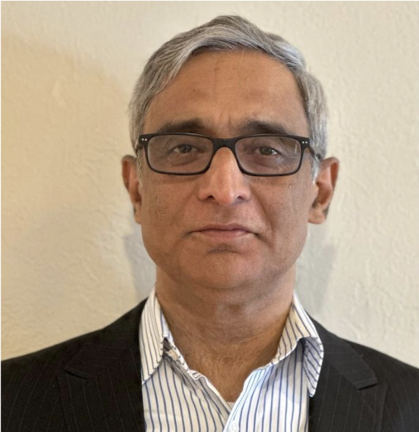
Jayanta Lahiri has over three decades of experience in semiconductor design, specifically in Foundation IP and Arm core benchmarking. His special interests include low-power, low-voltage, embedded memory compilers in FinFET technologies, and achieving best-in-class SoC implementations for IoT and automotive applications. Currently, at M31, he is responsible for end-user customer adoption of Foundation IP to deliver the most optimized PPA for customers. Prior to this, he held management positions at Arm and GF. He has three granted U.S. patents. He holds a master’s degree in Electrical Engineering from the Indian Institute of Technology Madras and a Bachelor of Engineering degree in Electrical Engineering from the Indian Institute of Engineering Science and Technology, Shibpur.
Topic: Beyond Moore: Are chiplets, AI accelerators and feature-rich CMOS technologies redefining the Future of VLSI
Panel Members - Shri Sumit Goswami, VP Qualcomm, India
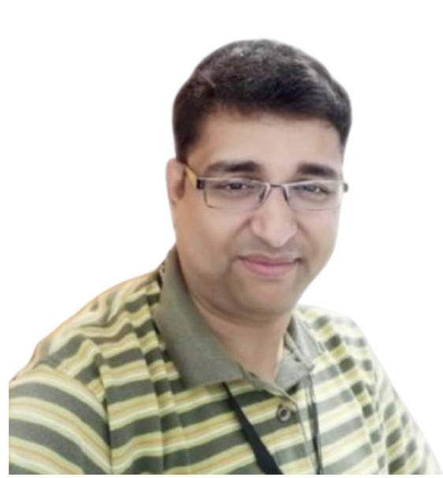
Sumit has over two and a half decades of experience in the semiconductor industry and is widely recognized for building high-performance teams and delivering cutting-edge SoCs. He currently leads the Central Solutioning and Operations group, Custom Silicon Design and also leading Qualcomm Chennai HW design team . He joined Qualcomm thirteen+ years ago and has held various leadership roles within the India silicon engineering teams. Prior to Qualcomm, Sumit worked at Intel and Synopsys, where he designed complex SoCs for servers, client computing, integrated graphics, and IoT applications. Sumit represents Qualcomm in several external industry bodies and initiatives, and he also chairs the Qualcomm India Academic Council. Throughout his career, he has contributed to all aspects of chip design—from transistor-level design to delivering SoC products to customers. Sumit holds a B.Tech in Electronics and Telecommunication from IIEST and an Executive MBA from IIM Calcutta. - Shri. Vikas Gupta, Sr. Director, Synopsys, India
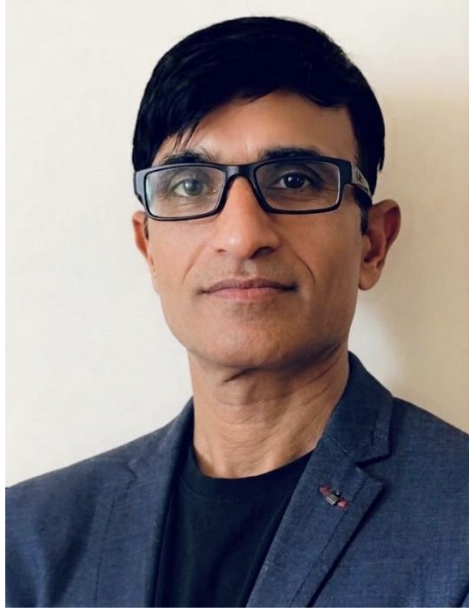
Vikas Gupta is the Senior Director of Applications Engineering at Synopsys, where he leads the Signoff Applications Engineering team for India. With over 25+ years of experience in the semiconductor industry, Vikas has held pivotal CAD and EDA roles. In his previous tenure at Synopsys, he managed the Physical Verification and Parasitic Extraction team for APAC, leading cross-functional groups to accelerate advanced node chip tape-outs for tier-one customers across Taiwan, China, Singapore, Malaysia, and India. Prior to Synopsys, he led the Calibre Applications Engineering team at Siemens EDA, India. Vikas holds an M.Tech in Integrated Electronics and Circuits from IIT Delhi, India and began his career as a CAD Engineer at Cypress Semiconductor. On weekends, he enjoys playing golf with friends. - Shri. Devesh Dwivedi, Director eNVM Product Development, GlobalFoundries
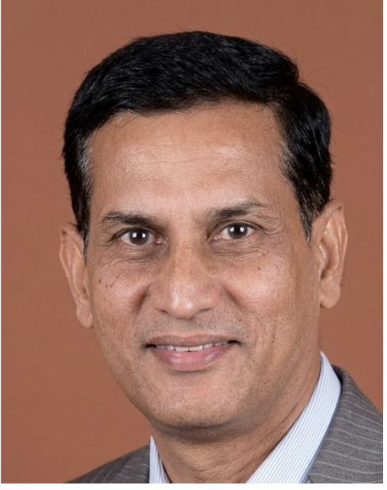
Dr. Devesh Dwivedi is a semiconductor industry leader with over ~27 years of experience in VLSI design, IP development, and advanced semiconductor technologies. He currently serves as Director at GLOBALFOUNDRIES, Bengaluru. He holds a Ph.D. in Electronics Engineering from IIT (BHU), Varanasi, and has completed an Executive Management Program from IIM Bangalore. Throughout his career, he has held leadership roles at GLOBALFOUNDRIES, IBM, NXP, Infineon, Intel, and STMicroelectronics. Dr. Dwivedi has authored 50+ technical publications and holds 26 patents, including multiple US-granted patents. He has supervised several Ph.D., MS, and M.Tech dissertations and serves as a visiting faculty member at IIT, NIT, IIIT. A Senior Member of IEEE, he actively contributes to academia, industry, and semiconductor ecosystem development in India. His achievements include the GLOBALFOUNDRIES CEO Award, IBM Ph.D. Fellowships, and numerous excellence awards for innovation and leadership. He is widely recognized for establishing semiconductor Centers of Excellence, advancing university collaborations, and nurturing the next generation of engineering talent. - Shri. Vishal Gupta, Vice President of R&D at Infineon Technologies
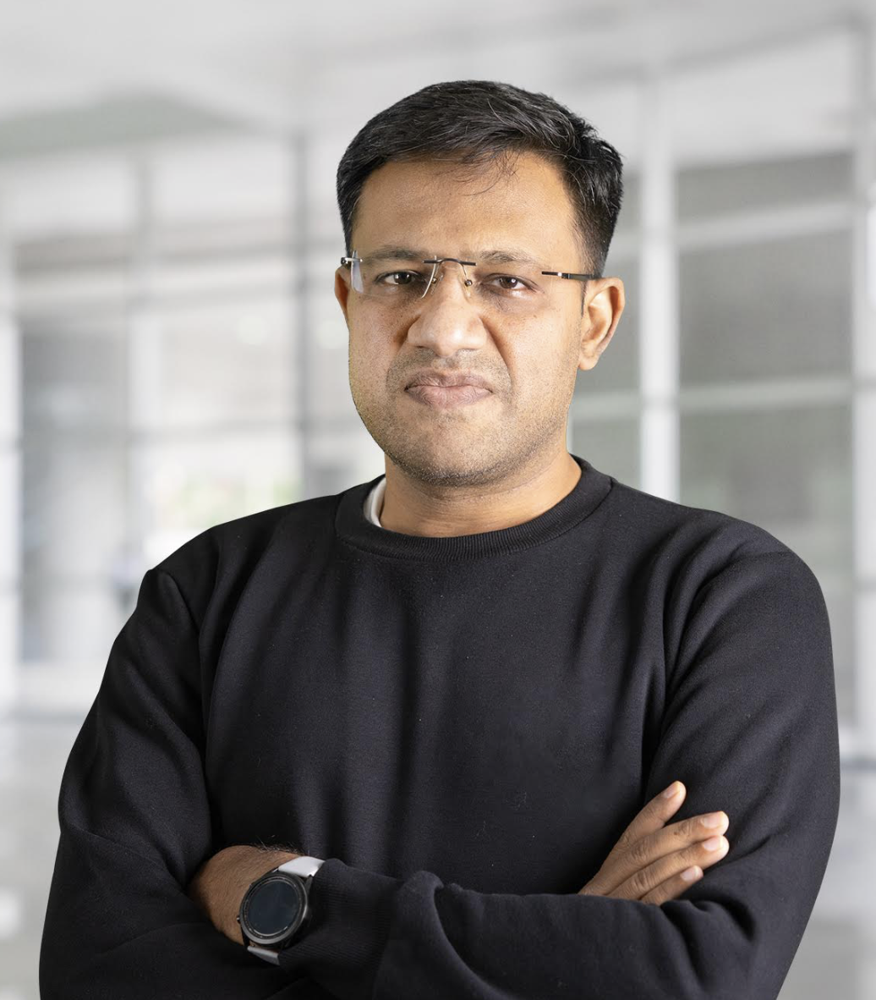
Vishal Gupta serves as Vice President of R&D at Infineon Technologies, where he leverages more than 25 years of experience in semiconductor engineering and technology leadership. Over the course of his career, including senior leadership roles at Texas Instruments and Maxim Integrated, he has built and led high-performing R&D organizations focused on turning complex technical challenges into successful commercial products. His expertise spans power management, protection, and interface technologies, with significant contributions to product innovation and development. Vishal holds an M.S. from Carnegie Mellon University, a B.Tech from IIT Kanpur, and multiple patents in power transistor control and protection circuitry.
Academic Panel 1
Academic Panel 1
Chair: TBD
- Topic: Semiconductor Education for the Next-Gen ICs in the era of AI
- Moderator: Prof. Bhargab Bhattacharya, IEEE Fellow (Prime Minister Professor, IIEST Shibpur)
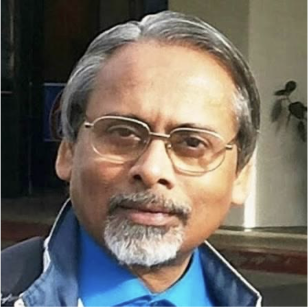
Prof. Bhargab B. Bhattacharya is currently an ANRF Prime Minister Professor at IIEST Shibpur. He had been on the faculty of Indian Statistical Institute, Kolkata, for nearly four decades. He later joined IIT Kharagpur as a Distinguished Visiting Professor. He also served as a Visiting Professor at the University of Nebraska–Lincoln and Duke University (USA), the University of Potsdam (Germany), Tsinghua University (Beijing, China), and NIT Rourkela. Currently, he is teaching at Ashoka University, Sonipat, Haryana. He received the B.Sc. degree in Physics from Presidency College, Kolkata, the B.Tech. and M.Tech. degrees in Radiophysics and Electronics, and the Ph.D. degree in Computer Science, all from the University of Calcutta. Dr. Bhattacharya’s research interests include VLSI design and test, image analysis, and microfluidic lab-on-chips. He has published more than 400 technical articles, authored or edited five books, and holds one Indian and ten U.S. patents. He is a Fellow of the Indian National Academy of Engineering, a Fellow of the National Academy of Sciences (India), a Fellow of the Asia-Pacific Artificial Intelligence Association (AAIA), and a Fellow of the IEEE. - Speaker: Prof. Peter A. Beerel, Professor, USC University of Southern California
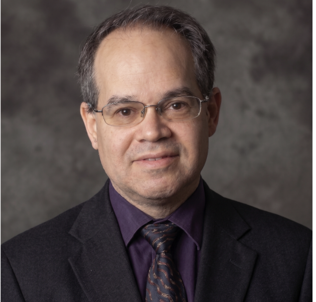
- Speaker: Prof. Partha Pratim Chakrabarti, Professor, IIT KGP
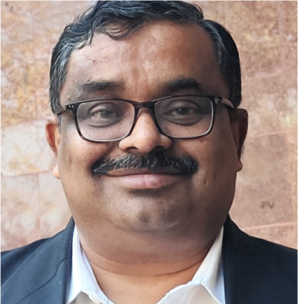
- Speaker: Prof. C.P. Ravikumar, Chief Learning Officer, VinyanaTech, Bangalore
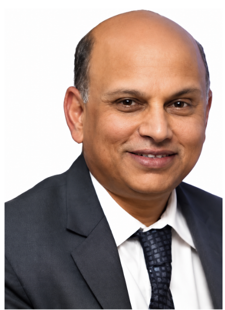
Dr. C.P. Ravikumar is the Chief Learning Officer at VINYANA TECH, Bangalore. He is also an Adjunct Profes- sor at IIT Madras and IIIT Dharwad. Ravikumar obtained his Ph.D. in Computer Engineering from the University of Southern California, a Master of Computer Science from Indian Institute of Science and a B.E. in Electronics from UVCE, Bangalore. He was a Professor of Electrical Engineering at IIT Delhi (10 years). He spent 23 years at Texas Instruments (India) where he held several roles, including Senior Technologist (VLSI Test), Director of University Relations, and Director of Technical Tal- ent Development. His research interests are in the areas of VLSI Test, VLSI Design, High Performance Computing, and VLSI Education. He established the VLSI Design and Test Sympo- sium (VDAT) and served as its General Chair for 16 years since its inception. He was the Honorary Secretary of VLSI Society of India for 8 years. He established the Bangalore Chapter of IEEE Circuits and Systems Society. He has published close to 300 research papers, of which 6 have won Best Paper Awards. Ravikumar is a Fellow of INAE, a life member of IETE, and a member of the editorial board in the IETE Journal of Education. - Speaker: Dr. Satya Gupta, President, VLSI Society of India
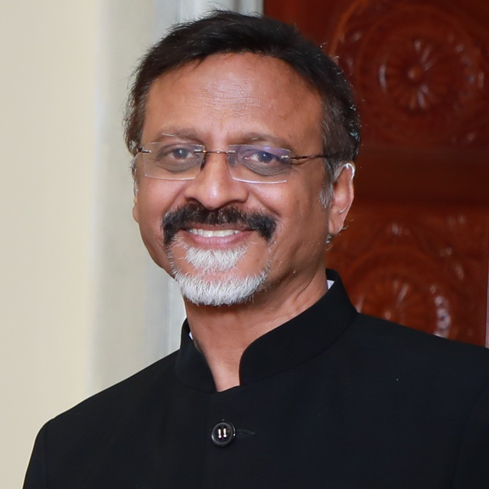
Special Session 12 – Secure & Sustainable AI for Cloud to Thing Continuum
Special Session 12 – Secure & Sustainable AI for Cloud to Thing Continuum
Chair: Krishnendu Guha, Jhilam Mukherjee, Madhuchanda Kar and Amlan Chakrabarti
- [753] Privacy-Enhanced Certificateless Hybrid Signcryption for Smart IoT Systems.Alia Umrani and Krishnendu Guha
- [759] Physically Related Functions Utilizing RRAM-Based In-Memory Computing Architecture.Mehmet Anıl Korkmaz , Gokulnath Rajendran , Qiawei Zheng, Zheng Wang and Anupam Chattopadhyay
- [760] Energy Harvesting Small Satellite Constellations: Orbital Edge Computing with in-Satellite processing.Sk Ismail, Saumya Jaipuria , Saumyadip Kar , Himadri Sekhar Paul and Ansuman Banerjee
- [764] SeReouS: Security and Resource-Aware Split CNN Inference on Multi-FPGA Edge Platforms.Mukta Debnath, Krishnendu Guha , Debasri Saha , Amlan Chakrabarti and Susmita Sur-Kolay
- [767] A Systematization of Knowledge (SoK) on TinyML Trade-offs in Healthcare IoMT.Sian Lun Lau, Saad Aslam , Lars Mathuseck , Deepika Roselind J. and Amlan Chakrabarti
- [783] Beyond Black-Box Models: An Interpretable Two-Stage Framework for ECG Rhythm Monitoring.Atin Mukherjee , Anand Kumar Mukhopadhyay , Nilanjan Biswas and Suman Samui
- [786] Confidence-Aware Edge–Cloud Inference Framework for Resource-Efficient AMG-Based Hand Gesture Recognition.Anand Kumar Mukhopadhyay , Sankalpa Das , Atin Mukherjee and Suman Samui
- [789] FedGALP: Federated Generative Adversarial Learning for Remote PhotoplethysmographyEmon Dey , Zahid Hasan and Nirmalya Roy
Special Session 10 – Model–Hardware Co-Design with In-Sensor & Neuromorphic Architectures
Special Session 10 – Model–Hardware Co-Design with In-Sensor & Neuromorphic Architectures
Chair: Gourav Datta and Akhilesh Jaiswal
- [724] Sparse and Efficient Rubber Leaf Disease Detection Using Lightweight Spiking Neural Network.Jaydip Mukhopadhyay and Debanjan Acharyya
- [796] Towards the Design of a Radiation-Hardened SNN Accelerator Using SystemVerilogCSP and Chisel.Yuou Qiu, Prahalad Chari, Moises Herrera, Godha Garudaiahgar, Michael Etter, Cole Sherrill, Georgios Dimou and Peter Beerel
- [800] Invited: Streaming Intelligence at the Pixel: A Vision for Next-Generation In-Sensor Computing.Chengwei Zhou, Xuming Chen, Shaahin Angizi, Baibhab Chatterjee, Swarup Bhunia and Gourav Datta
- [828] Silicon Photonics for Edge Vision Transformers: From Efficient Inference to On-Chip Adaptation.Mehrdad Morsali, Chengwei Zhou, Deniz Najafi, Xuming Chen, Zahra Ghanaatian, Arman Roohi, Mahdi Nikdast, Gourav Datta and Shaahin Angizi
- [743] From Photoreceptors to Ganglion Cells: A 3D Integration Pathway to Retina-Inspired Vision SensorsSubhradip Chakraborty, Shay Snyder, Maryam Parsa, Gregory Schwartz, Akhilesh Jaiswal
- [793] APEX: A Dual-Sparsity Accelerator for Precise and Efficient SNN Inference.Devgokul Bawa Venkates, Sreeram Radhakrishnan, Rajshekhar Rakshit and Gopalakrishnan Srinivasan
- [827] Invited: EntroMCU – A Hardware-Algorithm Vision for Entropy-Coded Inference on Microcontrollers.Arnab Sanyal, Gourav Datta and Sandeep Chinchali
Women in Engineering
Women in Engineering
Chair: Dr. Ruchika Gupta
- Talk: Prof. Sanghamitra Bandyopadhyay, Director ISI Kolkata
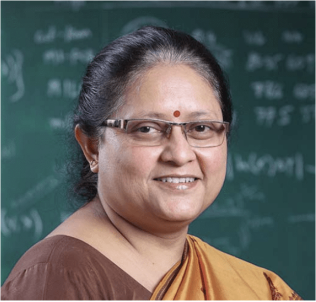
BiographyDr. Sanghamitra Bandyopadhyay is a distinguished computer scientist and professor at the Indian Statistical Institute (ISI), Kolkata. She served as the first woman Director of ISI from 2015 to 2025. Her research spans computational biology, machine learning, and evolutionary computation. She is a recipient of the Padma Shri, the Infosys Prize, and the Shanti Swarup Bhatnagar Prize, and serves on the Prime Minister’s Science, Technology, and Innovation Advisory Council (PM-STIAC). - Talk: Prof. Sanjukta BhanjaBiographyDr. Sanjukta Bhanja is a Professor of Electrical Engineering and the Executive Associate Dean of the College of Engineering at the University of South Florida (USF). She leads the Nano-Computing Research Group (NCRG) at USF. Her research focuses on VLSI and nano-electronics, sub-22nm CMOS reliability, and magnetic cellular automata. She is a recipient of the NSF CAREER Award.
- Talk: Prof. Hai LiPANEL Topic: Women pioneering the era of AI-Enabled Semiconductor innovation
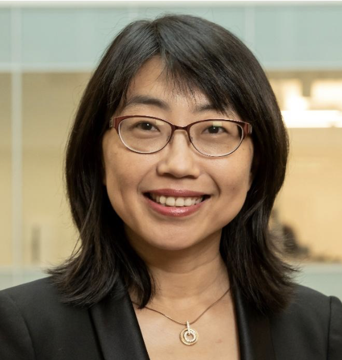
Hai (Helen) Li is the Marie Foote Reel E’46 Distinguished Professor and Department Chair of the Electrical and Computer Engineering Department at Duke University. She received her B.S. and M.S. degrees from Tsinghua University, and her Ph.D. degree from Purdue University. Her research interests include neuromorphic circuits and systems for brain-inspired computing, machine learning acceleration and trustworthy AI, conventional and emerging memory design and architecture, and software and hardware co-design. Dr. Li served/serves as the Associate Editor-in-Chief and Associate Editor for multiple IEEE and ACM journals. She was the General Chair or Technical Program Chair of multiple IEEE/ACM conferences and the Technical Program Committee member of over 30 international conference series. Dr. Li has received many awards, including the IEEE Edward J. McCluskey Technical Achievement Award, Ten Year Retrospective Influential Paper Award from ICCAD, TUM-IAS Hans Fischer Fellowship from Germany, ELATE Fellowship, ten best paper awards, and another eleven best paper nominations from IEEE/ACM. Dr. Li is a fellow of IEEE, AAAS, ACM, and NAI. - Moderator: Prof. Usha Mehta
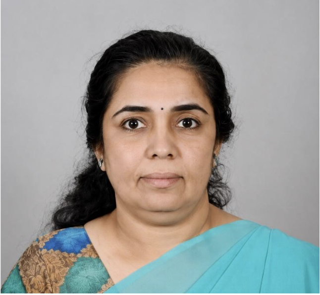
BiographyDr. Usha Mehta is a Professor in the Department of Electronics and Communication Engineering at Nirma University, Ahmedabad. She has over 24 years of academic and industrial experience. Her research areas include VLSI Testing, Digital VLSI Design, FPGA-based System Design, and Hardware Security. She is a Senior Member of IEEE and active in the Women-in-Engineering affinity group.
Special Session 11 -Design Automation for Next-Generation Microfluidic Biochips
Special Session 11 -Design Automation for Next-Generation Microfluidic Biochips
Chair: Sudip Roy, Shigeru Yamashita andKrishnendu Chakrabarty
- [758] A Local Dynamic Update Scheme for Stable Multi-Abstraction-Level Simulation of Large-Scale Microfluidic DevicesMichel Takken , Anisha Chowdhury and Robert Wille
- [798] HyDRA: A Slug-Flow Microfluidic Architecture and Instruction Set.Aarush Kumbhakern and Bhargab Bikram Bhattacharya
- [797] Efficient and Reliability-Aware Module Placement for MEDA Biochips via Policy-Based Reinforcement LearningChaitanya Sadineni , Jatin Chowhan, Tamal Mandal and Sudip Roy
- [771] Abstract Simulation of Droplet Propagation in Microfluidic ChannelsAnisha Chowdhury , Michel Takken , Maria Emmerich and Robert Wille
- [799] Homogeneous Mixing for Sample Preparation on Micro-Electrode-Dot-Array Microfluidic Biochips.Debraj Kundu , Yushen Zhang , Tsun-Ming Tseng , Shigeru Yamashita and Ulf Schlichtmann
- [801] TEMP: Transport Evicted Ring Mixer Placement on Programmable Microfluidic Devices.Tharuniswer R , Anshul Alok Gharde, Debraj Kundu, Prabhas Sagiraju and Sudip Roy
- [873] Compiling and Executing Fluidic Programs on the OpenDrop V4: Practice and ExperienceVahagn Tovmasian, Symphony Walter-Eze, Nashwaan Ali Khan, William H. Grover, Manu Sridharan and Philip Brisk
Special Session 9 – Resilient IoT & Edge Intelligence for Sustainable Infrastructure & Health
Special Session 9 – Resilient IoT & Edge Intelligence for Sustainable Infrastructure & Health
Chair: Laavanya Rachakonda, Ajay Kumara Makanahalli and Anand Bapatla
- [716] A Real-Time Edge-Intelligent Embedded System for Crash Impact Detection in Two-Wheelers.Chetan Harsha Lekkala, Sitadevi Bharatula, Hema Rohith Sannareddy, Vineel Talluri, Sarangam K and B Naresh Kumar Reddy
- [741] iTexture 2.0: Texture Aware Food and Nutrient Recommendation for Texture Sensitive Toddlers.Indira Devi Siripurapu, Laavanya Rachakonda, Saraju Mohanty and Elias Kougianos
- [754] SANDS: Security-Aware Anomaly Detection for IoMT Systems.Sai Sri Harsha Chakravarthula, Laavanya Rachakonda, Saraju Mohanty and Elias Kougianos
- [855] EdgeShield-LLM: Hardware-Rooted Integrity Verification for Edge LLM Deployment Bundles.Sai Sri Harsha Chakravarthula, Laavanya Rachakonda, Saraju Mohanty and Elias Kougianos
- [742] iGlyHb: IoMT-Driven Glycemic Risk Stratification Using CGM and Dietary Logs.Indira Devi Siripurapu, Laavanya Rachakonda, Saraju Mohanty and Elias Kougianos
Special Session 13 – Emerging Paradigms in Hardware Security
Special Session 13 – Emerging Paradigms in Hardware Security
Chair:
- [591] Unleashing Live Attacks on Active Processes in Multitenant FPGAs.Bharadwaj Madabhushi , Sandip Kundu
- [592] Escaping the Hypervisor: Bare-Metal Attacks on Multi-Tenant FPGA Platforms Through Debug Interface Exploitation.Bharadwaj Madabhushi and Sandip Kundu
- [696] Manufacturer-Specific Spatial Patterns in DDR4 RowHammer: A Formal Microarchitectural Characterization Using Spatial Autocorrelation Analysis.Vineet Suresh Kumar and Mohammad Farmani
- [709] SecureRAG-RTL: A Multi-Agent LLM Framework for Hardware Vulnerability Detection.Touseef Hasan, Blessing Airehenbuwa, Nitin Pundir, Souvika Sarkar and Ujjwal Guin
- [816] S-ALSA: Co-Design of Adiabatic Logic-based Sensing and Balanced Bit-Cells for Secure and Energy-Efficient MRAM.Wu Yang ,Amit Degada , Himanshu Thapliyal
- [841] Benchmarking LLMs on Reverse Engineering RTL from Obfuscated Netlists.Sanjoy Dev , Israt Jahan Bushra and Bhaskar Gaur
- [847] A Foundational Model for Autonomous Drone Navigation on Microcontrollers.Kurt Nunn and Tooraj Nikoubin
| Start | End | Duration | 10th July 2026 (Friday) | |||||
|---|---|---|---|---|---|---|---|---|
| 08:00 | 09:00 | 1:00 | Registration | |||||
| Room1 | Room2 | Room 3 | Room 4 | Room 5 | Room 6 | |||
| 09:00 | 10:00 | 1:00 | Technical Session – 6A : System Design & Security | Technical Session – 6B : Applied & Future Computing | Special Session – 14 : RISC-V with Hardware Accelerator for Cryptographic, DSP and AI Computing: Architectures & Emerging Design Methodologies | Technical Session – 6C : Emerging & Post-CMOS Technologies | Technical Session – 6D : System Design & Security | Technical Session – 6E : Emerging & Post-CMOS Technologies |
| 10:00 | 10:30 | 0:30 | Tea Break | |||||
| 10:30 | 11:00 | 0:30 | Keynote 8: Closing the Test Escape Gap Behind Silent Data Corruption Prof. Shawn Blanton, Professor, Carnegie Mellon University, USA |
|||||
| 11:00 | 11:30 | 0:30 | Keynote 9: Defect Analysis, Built-in Self-Test, and Repair for Advanced Packaging Prof. Krishnendu Chakrabarty, Arizona State University, USA |
|||||
| 11:30 | 12:00 | 0:30 | Keynote 10: ChipIN Centre: Catalyzing India’s Chip Design Revolution Shri S.D. Sudarsan, Executive Director, C-DAC Bangalore |
|||||
| 12:00 | 13:15 | 1:15 | Technical Session – 7D : Digital Circuits & FPGA based Designs | Technical Session – 7A : Digital Circuits & FPGA based Designs | Special Session – 16 : AI-based Hardware Generation | Special Session – 15 : Long-Life ES: Extended Lifespans & Circular Economy of Electronic Systems | Technical Session – 7C : System Design & Security | Technical Session – 7B : Emerging & Post-CMOS Technologies |
| 13:15 | 14:15 | 1:00 | Lunch Break | |||||
| 14:15 | 14:45 | 0:30 | Keynote 11: Modern Times of Secured Chip Design: Using but not Trusting Machine Learning Prof. Debdeep Mukhopadhyay, IIT Kharagpur, India |
|||||
| 14:45 | 15:15 | 0:30 | Keynote 12: Machine Learning meets Large-Scale Chip Design: The Bidirectional Highway Prof. Partha Pratim Pande, Voiland College of Engineering and Architecture, USA |
|||||
| 15:15 | 17:00 | 1:45 | Technical Session – 8A : System Design & Security | Technical Session – 8B : Emerging & Post-CMOS Technologies | Technical Session – 8C : Applied & Future Computing | Technical Session – 8D : Digital Circuits & FPGA based Designs | Technical Session – 8E : System Design & Security | |
| 17:00 | 17:30 | 0:30 | End of the Conference | |||||
Session Details — 10th July 2026 (Friday)
Technical Session 6A – System Design & Security
Technical Session 6A – System Design & Security
Chair: Dr. Mostafizur Rahman, USA
- [555] Reliable and Area-Efficient Polar Decoders for SRAM PUF-based Key GenerationXu Wang, Per Larsson-Edefors
- [565] LEMD-GARF: Lightweight Edge-based Malware Detection Using Genetic Algorithm Feature Selection and Random Forest Classification.Ali Rezazadeh, Majid Nezarat, Ali Kalate, Hadi Shahriar Shahhosseini, Amin Rezaei
- [158] Zero-Trust Power Management for SoCs: Entropic DVFS Defense Against Timing FaultsKhurram Khan, Arnab Kumar Biswas, David Laverty
- [137] Fast Transformer Inference on ARM-Based HMPSoCs.Hang Xu, Yixian Shen, Thanassis Giannetso, Anuj Pathania
Technical Session 6B – Applied & Future Computing
Technical Session 6B – Applied & Future Computing
Chair: Dr. Rajesh Kedia, IIT Hydrabad
- [146] Unmasking the Camouflage: Unsupervised Detection of Homogeneous Emitters.Somnath Mondal
- [157] One Index to Run Them All: Fast and Accurate Inference with Iso-Indexed Codebooked Ensembles.Stefano Albini, Christodoulos Kechri, Jonathan Dan, Giovanni Ansaloni, David Atienza
- [633] Transforming Integer NPUs: Efficient Piecewise Polynomial Approximation for Flexible Nonlinear Computation via Normalization Unit ReuseLionnus Kesting, Arpan Suravi Prasad, Viviane Potocnik, Gamze Islamoglu, Francesco Conti, Luca Benini
- [645] Leveraging Quantum Superposition and Entanglement with Mixed Precision for Enhanced CNN-Based Diabetic Retinopathy AnalysisRaisa Santra, Apurba Nand, Pulak Mondal, Avik Kumar Das, Ardhendu Sarkar
Special Session 14 – RISC-V with Hardware Accelerator for Cryptographic, DSP and AI Computing: Architectures & Emerging Design Methodologies
Special Session 14 – RISC-V with Hardware Accelerator for Cryptographic, DSP and AI Computing: Architectures & Emerging Design Methodologies
Chair: Bishnu Prasad Das and Rajat Sadhukhan
- [769] Instruction-based Dynamic Frequency Scaling for Enhancing Speed of RISC-V Processor in FPGA.Anu Verma, Adabala Venugopal, Ritik Raj , Bishnu Prasad Das and Pramod Kumar Meher
- [812] HERMES-NTT: Scalable and ML-based NTT Acceleration Framework for Efficient LBC Computations on RISC-V Platforms.S Sanjib Kumar, Yekkaladevi Avinash, Vangapandu Lohith Kumar and Rajat Sadhukhan
- [818] Processor with Low-latency Configurable CORDIC-based Custom Instructions for Digital Signal Processing Applications.Anu Verma , Sanskar Jain and Bishnu Prasad Das
- [832] ML-Based Prediction of Hybrid Hazard Resolution for a Pipelined RISC-V.Nithin Krishna M S and Bishnu Prasad Das
Technical Session 6C – Emerging & Post-CMOS Technologies
Technical Session 6C – Emerging & Post-CMOS Technologies
Chair: Dr. Debiprasanna Sahoo, IIT Bhubaneswar
- [652] Silicon-on-Insulator Nanosheet FET for Ultra-Low Leakage and Temperature-Stable Operation.Ashiq Muhammed T, K P Pradhan
- [676] Adaptive Entanglement Management in Quantum Multi-Core ArchitecturesRajeswari Suance P S, Anubhab Dutta, Ruchika Gupta and John Jose
- [606] FeNIX: A FeCAP-Integrated SRAM for Assisted Write and Soft-Error Resilient OperationRakesh Acharya, Rudra Biswas, Md Rahatul Islam Udoy, Ahmedullah Aziz, Rajiv V. Joshi, Kai Ni, Vijaykrishnan Narayanan
- [625] Synthesis of Phase Oracles Using CNOT+T Circuits and ESOP Minimization.David Clarino, Zanhe Qi, Shigeru Yamashita , Chitranshu Arya
Technical Session 6D– System Design & Security
Technical Session 6D– System Design & Security
Chair: Dr. Ayan Palchaudhuri, IIT Bhubaneswar
- [54] An Instruction Set Configurable ML-KEM Hardware Accelerator.Gautham Varma Kanumuru, Kaushik M, Nikhil Raghuraj, Nishchal A V, Sudeendra Kumar K
- [72] Hybrid Structural and Semantic Analysis for RTL-Level Hardware Trojan Detection Using Large Language Models.Namrata Dey, Siya Mandal, Ananyajyoti Mahanta, Shyamapada Mukherjee
- [76] A Differential-Reference-Based Weak PUF with Intrinsic Environmental Immunity in 28-nm CMOS.Arhum Gangoo, Santosh Yachareni, Anil Kumar Kandala, Zia Abbas
- [78] From Marks to Metrics: Statistically Robust Laser Mark Forensics for Counterfeit IC Detection.Divya Soni, Sharbani Purkayastha, Shyamapada Mukherjee
Technical Session 6E – Emerging & Post-CMOS Technologies
Technical Session 6E – Emerging & Post-CMOS Technologies
Chair: Dr. Gourav Datta Case Western Reserve University(CWRU)
- [548] Design of tunnel engineered double quantum dot nanowire FETs (DQD-NWFETs) for multi-threshold current generationNilayan Paul, Sanatan Chattopadhyay
- [593] qPRO-AQFP: Post-Routing Optimization of AQFP Circuits with Delay Line ClockingRobert Aviles, Ziyu Liu, Jingkai Hong, Sasan Razmkhah, Massoud Pedram, Peter Beerel
- [535] Memristor-based High-Speed Inexact Multiplier for Image Processing and Neural Networks.Sumit Kumar Suman, Srinivasu Bodapati, Pramod Kumar Meher
- [599] Generalizable Verilog Modeling Framework for Synchronous and Asynchronous Superconducting Pulse-Based Logic GatesElisabeth Feng, Robert Aviles, Peter Beerel
Technical Session 7D – Digital Circuits & FPGA based Designs
Technical Session 7D – Digital Circuits & FPGA based Designs
Chair: Dr. Debdoot Sheet, IIT Kharagpur
- [310] An Integrated Low-Power Wireless Panoramic Endoscopic System with Real-Time Lesion Localization and Multi-Voltage Hardware Acceleration.Ching-Hwa Cheng, Don-Gey Liu
- [455] Digitalized Adaptive Voltage-Domain Management Architecture for Dual-Voltage Energy-Aware Digital SystemsChing-Hwa Chneg
- [560] ReDFOD: An ASIC Architecture for Real-time Deduplication and First Occurrence Detection for Temperature Processing ApplicationsArnav Banerjee, Phrangboklang Lyngton Thangkhiew, Sheikh Wasmir Hussain
- [575] A Novel Digital Implementation of FPGA-based Reservoir Computing using Dynamic Nodes.Aabid Amin Fida, Sparsh Mittal
- [586] Accelerating Discrete Wavelet Transform on Versal AI Engine for CCSDS 122 Image Compression StandardJimit Gadhia, Rahul Das, Rishank Soni, Shail B. Joshi, Pranav Ram R , Sandip Paul, Joycee Mekie
Technical Session 7A – Digital Circuits & FPGA based Designs
Technical Session 7A – Digital Circuits & FPGA based Designs
Chair: Dr. Soumyajit Poddar, IIEST Shibpur
- [604] Architectural Design on Efficient Convolution based Core Block of Encoder Framework for Edge Device AccelerationSayantan Dutta, Prajjwal Verma, Indrajit Chakrabarti, Hafizur Rahaman
- [608] An Automated Resource-efficient Parallel Hardware Implementation of a Selective Quadratic Activation-based Reservoir Computing SystemsSai Seetharamaiah Payyavula, Shuai Song, Ziyi Niu, Aiden Stanford, Azeemuddin Syed, Anil Kumar Vuppala, Md Sakib Hasan
- [630] A Novel Extension-Region Aware Perspective for Circuit Designers for FinFET Based Buffers with Supply Voltage ScalingSarita Yadav, Nitanshu Chauhan, Pankaj Sharma
- [641] Redesign of YOLOv11-Nano for DPU Accelerated Real-Time Human Detection Utilizing FPGA Hardware.Debjit Daw, Aishik Bandopadhyay, Parthabrata Ganguly, Subha Jyoti Das, Satyabrata Maity, Swagata Mandal, Amlan Chakrabarti
- [649] FPGA-Centric Architecture Design and Automation of Optimized Non-Restoring Array Dividers with Testability Support through Minimum OverheadMushini Akshaya, Ayan Palchaudhuri
AI-based Hardware Generation
AI-based Hardware Generation
Chair: Chandan Karfa and Anupam Chattopadhyay
- [808] LLMs for Secure Hardware Design and Related Problems: Opportunities and Challenges.Johann Knechtel and Ramesh Karri
- [834] Large Language Model Benchmarks for Verilog Generation: An Overview.Sriram Ranga and Anupam Chattopadhyay
- [755] A Compute-on-Arrival Neural Network ASIP Based on RISC-V Custom Instructions.Xinrui Nie, Ruiyi Sun , Zheng Wang , Jinghan Zhou, Chao Chen and Anupam Chattopadhyay
- [829] SynForge: Agentic AI-assisted Secured High-Level Synthesis for Integrated Circuits.Tishya Sarma Sarkar, Upasana Mandal , Sarani Bhattacharya and Debdeep Mukhopadhyay
- [863] ML-Based Transient Thermal Solver with Arbitrary Power Pattern Sequence and Realistic Boundary Conditions in 3DICZelin Lu, Akhilesh Kumar, Norman Chang, Haoliang Jiang, Lang Lin, Jessica Yen, Wenbo Xia, Yujing Luo and Gang Qu.
Special Session 15 – Long-Life ES: Extended Lifespans & Circular Economy of Electronic Systems
Special Session 15 – Long-Life ES: Extended Lifespans & Circular Economy of Electronic Systems
Chair: Sangeet Saha, Xiaojun Zhai and Klaus D. Mcdonald Maier
- [806] ALARM: Digital Twin-Assisted Reinforcement LeARning for Anomaly Mitigation in vehicular Edge Computing.Chandrajit Pal, Sangeet Saha, Xiaojun Zhai and Klaus D. Mcdonald Maier
- [807] CARE: Carbon and Aging Aware Task Processing for Real-time Heterogeneous Edge Devices.Shengyang Huang , Sangeet Saha, Amit Kumar Singh , Xiaojun Zhai and Klaus McDonald-Maier
- [810] Energy-Efficient Scheduling for Real-Time Task Graphs on Ad Hoc Switched Networks.Chhavi Chaudhary and Arnab Sarkar
- [811] Optimal Frame Aggregation and Routing For Zonal SDVs With TSN Backbone and CAN-based Zones.Ashiqur Rahaman Molla, Jaishree Mayank ,Arnab Sarkar, Arijit Mondal and Soumyajit Dey
- [815] On Analysis of Applications using MAGIC-based In-Memory Computing.Chandrajit Pal , Lennart Weingarten , Klaus D. McDonald-Maier, Rolf Drechsler, Sangeet Saha and Kamalika Datta
Technical Session 7C – System Design & Security
Technical Session 7C – System Design & Security
Chair: Dr. Rajendra Bishnoi,TU Delft
- [91] A Configurable HQC Hardware Architecture via Soft-Modular Logic and Fixed Memory Structures.Kamal Raj, Peizhou Gan, Anupam Chattopadhyay
- [95] VIKRAM: Virtual-address Informed K-level Radix Acceleration MechanismPravesh Jamgade, Venkata Kalyan Tavva, Debiprasanna Sahoo
- [101] A Practical Obfuscated Barrier FSM Framework for SRAM IP Protection.Shrutorshi Roychowdhury, Sreeja Rajendran, Yash Agrawal, Vinay Palaparthy
- [110] A Novel and Attack-Resilient Quad-pixel CMOS Image Sensor–Based PUF.Vishesh Mishra, Mahendra Rathor, Sparsh Mittal, Urbi Chatterjee
- [263] On Securing IEEE 1838-compliant 3DIC Architectures Through Scan Data Encryption.Anjum Riaz, Pardeep Kumar, Raj Kumar Choudhary, Yamuna Prasad, Satyadev Ahlawat
Technical Session 7B – Emerging & Post-CMOS Technologies
Technical Session 7B – Emerging & Post-CMOS Technologies
Chair: Dr. Neeraj Goel, IIT Ropar
- [320] Novel and Reconfigurable PUF Design with VGSOT-MTJ for ML Attack ResilienceAvani Gajallewar, Thampula Kartheek, Aditya Japa, Deepika Gupta
- [330] Material to Circuit Co-Design of DG-FDSOI NCFETs Using Physics-Guided K-Nearest Neighbors Characterization and Gaussian Process Regression Circuit Designs.Anshul Awasthi, Omkar Kulkarni, Surya Shankar Dan
- [203] Extending BioScript Language with Advanced Mixing and Splitting Operators for MEDA BiochipsTamal Mandal, Sudip Roy
- [345] High-Frequency Performance Investigation of Gate-Stack Vertical TFET Architectures: A Simulation StudyAmit Kumar, Prabin Kumar Bera, Navaneet Kumar Singh, Manoj Kumar, Durbadal Mandal, Rajib Kar
- [388] Dilution Synthesis Using Farey Sequence for Free-Flowing Microfluidic Biochips.Tapalina Banerjee, Sudip Poddar, Tsung-Yi Ho, Bhargab B. Bhattacharya
Technical Session 8A – System Design & Security
Technical Session 8A – System Design & Security
Chair: Dr. Anupam Chattopadhyay, NTU Singapore
- [588] Unsupervised Side-Channel Extraction of Dataflow AI Accelerator Architectures Implemented on FPGA.Mathieu Descos, Brice Colombier, Cédric Killian
- [286] SAT-Resilient FSM Obfuscation via Cyclic Logic and Flip-Flop Camouflage.Tarik Ibrahimpasic, Bing Li, Ulf Schlichtmann
- [318] System-Level Evaluation of Accelerator Decoupling for Die-to-Die Chiplet Integration.Yaswanth Tavva, Vinay B. Y. Kumar, Debjyoti Bhattacharjee
- [333] HPC-VAD: Hardware Performance Counter based Side-channel Analysis for Voice Activity Detection in Automatic Speech Recognition using Multi-scale Signed Recurrence PlotsPranesh Santikellur, Anurag Dutta, Rajat Subhra Chakraborty
- [359] Aging Induced Data Imprinting Effects on SRAM ArrayAbishek Stephen Vellankanni, Zakia Tamanna Tisha, Nayan Patel, Ujjwal Guin, Biswajit Ray
- [389] SecuBeat: A PUF and Secure Boot-Enabled Lightweight Authentication Framework for IoMT.Aranya Gupta, Vishal Pal, Bishnu Prasad Das
Technical Session 8B – Emerging & Post-CMOS Technologies
Technical Session 8B – Emerging & Post-CMOS Technologies
Chair: Dr. Anindita Chakraborty, Siksha “O” Anusandhan (SOA) University, Bhubaneswar
- [464] One-Dimensional Silicon Carbide Nanostructures for Nanoscale Local Interconnects: A Comparative Study.Shakti Kumar, Ashish Mishra, Boddepalli Santhibhushan
- [499] An In-Situ Spatio-Temporal Sequence Detector for Neuromorphic Vision Sensor Empowered by High Density Vertical NAND StorageVarun Parekh, Zijian Zhao, Po Kai Hsu, Yixin Qin, Yiming Song, A N M Naiful Islam, Ningyuan Cao, Siddharth Joshi, Thomas Kampfe, Moonyoung Jung, Kwangyou Seo, Kwangsoo Kim, Wanki Kim, Daewon Ha, Sourav Dutta, Abhronil Sengupta, Xiao Gong, Shimeng Yu, Vijay Narayanan, Kai Ni
- [534] High-Performance MAGIC-based Approximate Average Pooling using Memristors for In-Memory ComputingSumit Kumar Suman, Srinivasu Bodapati, Pramod Kumar Meher
- [307] OSCAR-FE: Open-Source Accurate and Robust FeFET Model for SPICE Simulation.Abdulqader Mahmoud, Sai Raman, Yash Biyani, Rajendra Bishnoi, Said Hamdioui
- [340] Physics-Informed and Junction-Aware Outlet Concentrations Prediction for Random MicrofluidicsRadhika Maheshwari, Pulkit Garg, Tamal Mandal, Sudip Roy
Technical Session 8C – Applied & Future Computing
Technical Session 8C – Applied & Future Computing
Chair: Dr. Sparsh Mittal, IIT Roorkee
- [611] Resource-Efficient Time-to-Digital Converter with Integrated Coincidence-Counting Unit for Photonic-based Quantum Computing.Amit Kharade, Rahul Shrestha and Chandra Shekar Yadav
- [615] FLEX-LSTM: Hardware-Efficient LSTM Architecture Using Approximate Float–Fix Representation.Pranava M, Shashank S and Madhav Rao
- [553] SpecTopK: Speculative Top-K Selection with Cross-Layer Prediction for Efficient ViT Token.Hefei Feng, Ao Li, Fuchuan Luo, Zhisong Wei, Junbo Zhang and Hongxuan Guo
- [597] OASIS: Optimized Lightweight Autoencoder System for Distributed In-Sensor computing.Chengwei Zhou, Sreetama Sarkar, Yuming Li, Arnab Sanyal, Md Abdullah-Al Kaiser, Sercan Aygun, Hassan Najafi and Gourav Datta
Technical Session 8D – Digital Circuits & FPGA based Designs
Technical Session 8D – Digital Circuits & FPGA based Designs
Chair: Prof. Surajeet Ghosh, IIEST Shibpur
- [598] CSAP-ViT: Cascade Similarity–Attention Pruning for Accelerating ViTs.Akshansh Yadav and Palash Das
- [650] Digit-Serial Hardware Implementation of NTT for Kyber Architecture.Keerthija Puli and Vikramkumar Pudi
- [665] Architectural Variants on FPGA for Binary to BCD Converters with Maximally Configured LUT Inputs.Santosh Kumar and Ayan Palchaudhuri
- [689] A Design Framework of Dynamic Stress Control for NBTI-Resilient Power Gating.Vijay Pratap Yadav, Prateek Gupta, Vipin Kumar Singh, Vassilis Alimisis, Paul P Sotiriadis, Sanjeev Kumar Metya and Alak Majumder
Technical Session 8E – System Design & Security
Technical Session 8E – System Design & Security
Chair: Dr. Subhajit Das, UEM, Kolkata
- [451] PUF-secured Continuous AKA-cum Message Sharing Protocol for 5G-IoT Networks.Dipnarayan Das and Mahabub Hasan Mahalat
- [496] Catch@RTL: A methodology for Fine-grained Hardware Trojan Localization via Automated Design RTL Checking.Binod Kumar, Manisha Kumari, Ayush Dixit and Chandra Shekhar
- [600] Coverage-guided Accelerated Fuzzing Framework for Effective Hardware Trojan Detection.Jayanth Thangellamudi and Sai Manoj Pudukotai Dinakarrao
- [618] STInG-DNN: Lightweight Structural Task Integrity Guard for DNN Inference on FPGA Edge SoCs.Mukta Debnath, Debasri Saha, Amlan Chakrabarti and Susmita Sur-Kolay
- [667] Optimised BDD based dual rail pre-charge logic for lightweight ciphers to prevent power and timing attacks.Partha De, Chittaranjan Mandal and Udaya Parampalli
- [638] GRAFT: Graphlet-Triggered Backdoor Attack on GNN-Based Hardware Security Systems.Sanaz Kazemi Abharian and Sai Manoj Pudukotai Dinakarrao